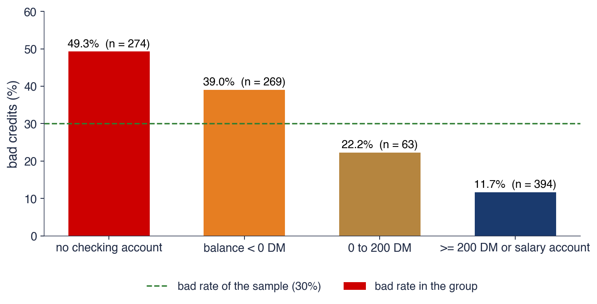

Bucharest University of Economic Studies IDA Institute Digital Assets Blockchain Research Center AI4EFin Artificial Intelligence for Energy Finance Romanian Academy, Institute for Economic Forecasting MSCA Digital Finance
Chapters 2 to 10 measured the risk of prices: the distribution of returns, their volatility, their tails and the VaR and ES that summarise them. A bank carries a second kind of risk, often larger than its market risk: the risk that a borrower does not pay back. Every day a lender must decide whether to accept an application for a loan and at which interest rate, and the decision rests on a number, the probability of default (PD) of the applicant. This chapter asks how a bank turns the data of an applicant into that probability, and how it knows that the number is right.
The answer is a chain of statistical tools. The expected loss of a loan and the Basel capital that covers losses above it both start from the PD. The PD itself is estimated from past loans with logistic regression or with Fisher's discriminant analysis, after every variable has been recoded by its Weight of Evidence; the fitted model is then written as a scorecard of points. The chapter uses 1,000 consumer credits from a German bank and 30,000 credit card holders from Taiwan as evidence. One variable, the state of the checking account, already moves the share of bad credits from 11.7% to 49.3%, and a six-variable scorecard ranks a random bad credit above a random good one in about 80% of the pairs of a test sample.
A good-looking number is not yet a good model, and the second half of the chapter is about validation: discrimination and calibration measured out of sample, a cut-off chosen from the costs of the two kinds of error, the bias created by the applicants the bank rejected, and the question whether an accurate score treats groups of applicants fairly. Two classic models of corporate default close the chapter: the Altman Z-score, built from accounting ratios, and the Merton distance to default, built from market prices.

Share of bad credits by the state of the checking account in the South German Credit data (1,000 consumer credits, 1973–1975). The dashed line is the sample average of 30%.
What you will be able to do
Define PD, LGD, EAD and the expected loss, and explain what the Basel IRB capital adds to the expected loss.
Compute the Weight of Evidence and the Information Value of a variable from a table of counts.
Estimate a logistic regression and interpret its coefficients as changes in log-odds and as odds ratios.
Derive Fisher's linear discriminant and compare it with the logit.
Scale a scorecard and validate it out of sample with the confusion matrix, AUC, Gini, KS, the Brier score and a calibration plot.
Seminar 12 comes before this lecture and practises the same tools on data.
Chapter plan
What a Credit Score IsThe lending decision, the history of scoring, PD, LGD, EAD, the expected loss and the Basel IRB capital.
Default DataThe South German Credit data, coding errors in the original data, class imbalance and the split into training and test samples.
AI for Scientific DiscoveryAn open question on machine-learning scores, how AI can help and what must be checked.
SummaryKey ideas, key formulas and self-check questions.
What a Credit Score Is
A credit score is a number that orders applicants by their risk of not paying back. This section sets out the decision the score serves, recalls how statistical scoring replaced the judgement of loan officers, and defines the three risk parameters of a loan: the probability of default, the loss given default and the exposure at default. Their product is the expected loss, which the bank prices in; the Basel capital formula then measures the loss above that level in a bad year.
When an applicant asks for a loan, the bank makes two decisions: whether to accept or reject the application, and, if it accepts, at which interest rate. Both decisions depend on how likely the applicant is to default. In everyday terms, default means that the borrower does not pay as agreed. The Basel II framework of the Basel Committee on Banking Supervision (paragraph 452) gives the regulatory definition: a default occurs when the bank judges that the borrower is unlikely to pay in full, or when the borrower is more than 90 days past due on a material obligation.
A credit score is a number computed from the data of an applicant that orders applicants by their risk of default. The probability of default (PD) is the probability that the borrower defaults within a fixed horizon, usually one year. A score can be good in two different senses. It discriminates well if it ranks the applicants correctly, so that those who later default tend to have worse scores than those who repay. It is calibrated if the PD it implies has the right level: among applicants with a PD of 5%, about 5% should default. Ranking is enough to accept or reject; pricing, provisions and capital need the level as well, and the chapter measures both.
Scores differ by the client and by the information they use. Application scores are computed for new clients from the data in their application; behavioural scores are computed for existing clients from their payment history. Consumer scores rest on statistical models estimated on many small loans, while corporate scores use accounting ratios and market prices, as in the Altman and Merton models of Section 9.
In brief
An applicant asks for a loan; the bank must decide accept or reject, and at which interest rate
default: the borrower does not pay as agreed; Basel: the bank judges the borrower unlikely to pay, or the borrower is more than 90 days past due on a material obligation Basel Committee (2006), ¶452
Credit score: a number computed from the data of an applicant that orders applicants by their risk of default
PD (probability of default): the probability of default within a horizon, usually one year
a good score both ranks (discrimination) and gives the right level of PD (calibration)
Kinds of scores
application scores (new clients) and behavioural scores (existing clients, from their payment history)
consumer scores (statistical models on many small loans) and corporate scores (accounting ratios, market prices)
Statistical credit scoring is older than the computer. In 1941 Durand (1941) studied the instalment loans of US lenders and separated good from bad loans with the discriminant analysis that Fisher had proposed five years earlier; this is the first statistical credit-scoring study. In 1956 the engineer Bill Fair and the mathematician Earl Isaac founded Fair, Isaac and Company, today FICO. In 1989 the company introduced the FICO score, computed from the reports of the credit bureaus and ranging from 300 to 850 points, which became the standard consumer score in the United States.
The review of Hand & Henley (1997) describes what changed. Before scoring, a loan officer judged each application from experience; statistical scoring replaced that judgement with a rule that is the same for every applicant. The rule is cheaper and faster, and, unlike a personal judgement, it can be tested: its error rates can be measured on past loans. A rule that is the same for everybody is not automatically fair, however, since the variables it uses may stand in for characteristics the law protects; Section 8 returns to this question.
In brief
1941: Durand (1941) separates good and bad instalment loans of US lenders with Fisher's discriminant analysis
Basel II describes the credit risk of a loan with three parameters. The PD is the probability of default within one year. The loss given default (LGD) is the share of the exposure that the bank loses if default occurs, after what it recovers from collateral or from the sale of the claim. The exposure at default (EAD) is the amount owed at the moment of default; for a fixed loan it is the outstanding balance, for a credit line it also includes the part the borrower may draw before defaulting.
The expected loss is the mean of the loss over one year. If default is an event with probability PD and the loss, when it occurs, is \(\mathrm{LGD} \times \mathrm{EAD}\), then
a product that holds when PD and LGD are independent. A loan of 100,000 RON with a PD of 2% and an LGD of 45% has an expected loss of \(0.02 \times 0.45 \times 100{,}000 = 900\) RON a year.
The expected loss is a cost of doing business, like the wages of the staff: the bank prices it into the interest rate and covers it with provisions. The danger lies elsewhere. In a bad year the defaults of many borrowers rise together, and the loss can be far above its mean. That part, the unexpected loss, is what the bank's capital must absorb, and the next frames measure it.
Under the internal ratings-based (IRB) approach of Basel II, the bank estimates the PD of each exposure with its own models (and, in the advanced version, also LGD and EAD), while the regulator fixes the formula that turns these estimates into capital (paragraphs 328–330 of the Basel II framework). For a retail exposure, the capital per unit of EAD is
where \(\Phi\) and \(\Phi^{-1}\) are the distribution function of the standard Normal distribution \(N(0,1)\) and its inverse, and \(R\) is the correlation of the borrowers with one common factor, the state of the economy. The risk-weighted assets (RWA) are \(12.5 = 1/0.08\) times the capital, because the bank must hold capital of at least 8% of its risk-weighted assets.
The logic of the formula comes from Gordy (2003). The term \(\Phi(z^*)\) is the default rate of the portfolio in a year whose common factor is so bad that it is exceeded only with probability 0.1%, a year that occurs once in 1,000 years. Multiplied by LGD, it is the loss in such a year; subtracting the expected loss leaves the unexpected loss. \(K\) is therefore the credit VaR 0.1% of the loss minus the expected loss, the same quantile idea as the VaR of Chapter 10, applied to a portfolio of loans.
In brief
IRB (internal ratings-based) approach: the bank estimates PD (and possibly LGD, EAD); the regulator gives the formula Basel Committee (2006), ¶328–330
\(K\): the capital per unit of EAD; \(\Phi\), \(\Phi^{-1}\): the \(N(0,1)\) distribution function and its inverse; 0.999: a bad year occurs once in 1000 years
\(R\): the correlation of the borrowers with one common factor; RWA: risk-weighted assets, of which the bank holds at least 8%
Logic Gordy (2003): the term in \(\Phi(\cdot)\) is the PD in a year whose common factor is exceeded only with probability 0.1%
so \(K\) is the credit VaR 0.1% of the loss minus EL: the unexpected loss (Chapter 10)
Question for the room ▶ raises ρ from 0.2 to 0.5. What happens to the probability that a loan with PD = 2% defaults in a bad year (y = −3)?
Answer
It rises from 21.3% to 53.8%; in a typical year (y = 0) it falls from 1.08% to 0.18%. A larger weight of the common factor concentrates the defaults in the bad years, while the average over all years stays at 2%.
The model behind the IRB formula is a one-factor model. Borrower \(i\) defaults when a latent index of his financial health falls below a threshold:
where \(Y\) is the state of the economy, common to all borrowers, \(\varepsilon_i\) is the borrower's own shock, \(Y\) and \(\varepsilon_i\) are independent \(N(0,1)\), and \(\rho\) is the weight of the common factor. The index is itself \(N(0,1)\), so the unconditional probability of default is exactly PD. Given a particular year \(Y = y\), only \(\varepsilon_i\) is random, and the conditional PD is
The chart plots the conditional PD against the unconditional PD for three states of the economy, \(y = -3\),\(0\) and \(3\), with \(\rho = 0.2\). The same loan defaults with probability 21.3% in a bad year (\(y = -3\)), with 1.1% in a typical year (\(y = 0\), the median of the factor) and almost never in a good year. The average over all years is the 2%, but the years themselves are very different: defaults come in clusters. The IRB formula evaluates (12.3) at \(y = \Phi^{-1}(0.001)\), the year that is worse than 99.9% of all years, with the correlation \(R\) in place of \(\rho\).
In brief
Borrower \(i\) defaults if \(\sqrt{\rho}\,Y + \sqrt{1 - \rho}\,\varepsilon_i < \Phi^{-1}(\mathrm{PD})\); \(Y\): the state of the economy; given \(Y = y\): PD\((y) = \Phi\big((\Phi^{-1}(\mathrm{PD}) - \sqrt{\rho}\,y)/\sqrt{1 - \rho}\big)\), \(\rho = 0.2\)
\(\varepsilon_i\): the borrower's own shock; \(Y\) and \(\varepsilon_i\) independent \(N(0,1)\); \(\rho\): the weight of the common factor
Interpretation: a loan with PD \(= 2\%\) defaults with probability 21.3% in a bad year (\(y = -3\)), 1.1% in a typical year and almost never in a good year; IRB uses \(y = \Phi^{-1}(0.001)\)
The weight \(w\) lies in \([0, 1]\) and grows with PD, so \(R\) falls from 0.16 for very safe loans to 0.03 for very risky ones: the default of a safe borrower is mostly driven by the economy, that of a risky borrower mostly by his own situation. For PD = 2% the formula gives \(R = 0.095\); the two Normal quantiles needed are \(\Phi^{-1}(0.02) = -2.054\) and \(\Phi^{-1}(0.999) = 3.090\).
The argument of \(\Phi\) is \((-2.054 + \sqrt{0.095} \times 3.090)/\sqrt{1 - 0.095} = -1.160\), and \(\Phi(-1.160) = 12.31\%\): this is the PD of the loan in the bad year of the formula. The capital is \(K = 0.45 \times (12.31\% - 2\%) = 4.64\%\) of EAD, that is 4,639 RON for the loan of 100,000 RON. The risk-weighted assets are \(12.5 \times 4{,}639 = 57{,}986\) RON, a risk weight of 58%.
The two numbers of the loan now have distinct roles. The expected loss of 900 RON is priced into the interest rate; the capital of 4,639 RON stays in the bank to absorb a year in which defaults reach 12.31% of such loans instead of 2%.
Question for the room ▶ raises PD from 2% to 4%. Does the capital K double?
Answer
No: it rises from 4.64% to 5.20% of EAD (+12%), while EL doubles from 0.90% to 1.80%. The correlation R falls from 0.095 to 0.062 as PD rises, and the extra defaults are increasingly expected rather than unexpected.
Question for the room Other retail exposures, LGD 45%: PD rises from 5% to 10%, so EL doubles (from 2.25% to 4.50% of EAD). What happens to the capital K?
Answer
It rises only from 5.31% to 6.04% of EAD (+14%). K covers the unexpected loss: the higher the PD, the larger the share of the loss that is expected and priced in, and R falls from 0.053 to 0.034. Above a PD of about 16%, K is even smaller than EL.
The chart repeats the computation for every PD, with LGD = 45%, for three classes of retail exposures: other retail, where \(R\) falls from 0.16 to 0.03 as above; residential mortgages, with a fixed \(R = 0.15\); and qualifying revolving retail exposures such as credit cards, with a fixed \(R = 0.04\). The expected loss, \(0.45 \times \mathrm{PD}\) per unit of exposure, is a straight line.
The capital curves behave differently. They rise fast at low PD, where a small increase in PD moves the bad-year default rate a lot, and then flatten. A very risky loan is mostly an expected loss: much of what it will lose is already known, priced in and provisioned, and only the part above that mean needs capital. For other retail exposures, the expected-loss line crosses the capital curve at a PD of about 16%; above it, the loan is expected to lose more than the capital held against a bad year. The curve for mortgages lies highest because their high correlation makes them default together in a bad year.
In brief
LGD \(= 45\%\); capital \(K\) for other retail (\(R\) from 0.16 to 0.03), residential mortgages (\(R = 0.15\)) and revolving retail exposures (\(R = 0.04\))
Interpretation: EL grows linearly with PD; \(K\) grows fast at low PD and then flattens, because a very risky loan is mostly an expected (priced) loss
A credit score orders applicants by their risk of default, and its PD should also have the right level. The expected loss, PD × LGD × EAD, is priced in; the IRB capital covers the unexpected loss, computed from the PD in a once-in-1,000-years bad year of a one-factor model. For a retail loan of 100,000 RON with PD 2% and LGD 45%, the expected loss is 900 RON and the capital 4,639 RON. Both numbers start from the PD, and the next section introduces the data from which PDs are estimated.
Default Data
A scoring model is estimated on past loans whose outcome is known. This section presents the two data sets of the chapter, the South German Credit data and the Taiwan credit card data, and the features that make default data special: the long history of a wrongly labelled version of the German data, the rarity of defaults and the oversampling it leads to, and the split into a sample for estimation and a sample for testing.
The main data set of the chapter contains 1,000 consumer credits granted by a large regional bank in southern Germany between 1973 and 1975 (South German Credit, 2020; Grömping, 2019). The outcome is binary: the contract was complied with, a good credit, or it was not, a bad credit, coded default = 1. The sample has 300 bad and 700 good credits. Each credit is described by 20 variables, among them the state of the checking account, the duration of the credit, the credit history, the purpose of the loan, the amount in Deutsche Mark (DM), savings, employment and age.
The sample is stratified: bad credits are heavily oversampled. Their share in the sample is 30%, while the bad rate in the bank's portfolio was about 5%. All borrowers in the data had passed the bank's checks, so the applicants the bank rejected are missing; Section 8 discusses what this selection does to a model. The documentation also fixes a cost ratio: accepting a bad credit costs five times as much as rejecting a good one, a figure the chapter uses to choose cut-offs.
The data are published under the licence CC BY 4.0. They are small enough to be inspected line by line, which makes them a good training ground, and old enough to have a history of their own, told in the next frame.
For decades, the same credits circulated in the UCI Machine Learning Repository as "Statlog (German Credit)", one of the most used data sets in the classification literature. Grömping (2019) showed that the labels of the codes in that version were wrong. In the old version, the group "no checking account" was the safest: 394 credits, of which 11.7% were bad. In the corrected data, these 394 credits are those with a balance of at least 200 DM or a salary account, and "no checking account" is the riskiest group, with 49.3% bad credits.
The numbers in the file were right; only the labels attached to them were wrong. Every model estimated on the old version therefore predicted equally well, and every interpretation of this variable was reversed. A model that "found" that clients without a checking account are the safest would have passed any test of predictive accuracy.
Two checks would have caught the error. The first is to compare the frequency tables with the original source, here the book of Fahrmeir and Hamerle in which the data were first published. The second is to ask whether the signs make economic sense: it is hard to explain why clients without any account should repay more often than clients with a negative balance. The chapter uses the corrected South German Credit data throughout.
In brief
The data were used for decades in the UCI version “Statlog (German Credit)”, with code labels that were wrong Grömping (2019)
in that version, “no checking account” was the safest group: 394 credits, 11.7% bad
in the corrected data, those 394 credits have a balance of at least 200 DM or a salary account; “no checking account” is the riskiest group (49.3% bad)
The numbers were right, the labels were wrong: every model was fine, every interpretation of this variable was reversed
checks: compare the frequency tables with the original source (here the book of Fahrmeir and Hamerle), ask whether the signs make economic sense
We use the corrected South German Credit data throughout
Question for the room In the old Statlog labels, the 394 credits with a balance of at least 200 DM were called “no checking account” and looked like the safest group (11.7%). In the corrected data, what is the bad rate of the credits without a checking account?
Answer
49.3% (274 credits), the riskiest group, against 11.7% for a balance of at least 200 DM or a salary account: a ratio of 4.2. The figures were right in both versions; only the labels were swapped.
The chart shows the share of bad credits in each of the four groups of the checking-account variable, with the sample average of 30% as a dashed line. The bad rate falls steadily with the strength of the account: 49.3% for clients without a checking account, 39.0% for a negative balance, 22.2% for a balance between 0 and 200 DM, and 11.7% for a balance of at least 200 DM or a salary account.
A single variable thus separates the applicants well: the riskiest group defaults about four times as often as the safest. A bank that knew nothing else could already refuse the riskiest group and accept the safest. The next sections turn such differences into a model: Section 3 measures the information in each variable, and Section 4 combines several variables in a regression.
In brief
Share of bad credits in each group; dashed: the sample average of 30%
Interpretation: the risk falls from 49.3% (no account) to 11.7% (balance of at least 200 DM): one variable already separates the applicants well
Defaults are rare: a bank whose loans defaulted at a rate of 30% would not survive, and typical portfolios have a few percent of bad loans. A random sample of the bank's loans would therefore contain few bads and say little about them. Banks therefore oversample the bads; in the German data their share is 30% instead of about 5%.
Class imbalance creates the accuracy paradox. Accuracy, the share of correct classifications, rewards a rule that ignores the minority class: the rule "everybody is good" is right for 70% of the German sample and for 77.9% of the Taiwan data, without identifying a single bad payer. A measure that counts all errors together hides the errors that matter most, so Section 7 uses measures that look at the bads and at the goods separately.
The second data set of the chapter is the Taiwan credit card data (Default of Credit Card Clients, 2009; Yeh & Lien, 2009): 30,000 card holders, with the outcome default on the October 2005 payment, which occurred for 22.1% of them. The inputs are the credit limit, age, the repayment status in each month from April to September 2005, the monthly bills and the monthly payments. With 30 times more observations than the German data, the Taiwan data serve for the calibration and fairness analyses, where small groups would be too noisy.
In brief
Defaults are rare: a few percent of the loans of a bank; a sample with few bads tells little about them
banks therefore oversample bads (here 30% instead of about 5%)
Accuracy paradox: the rule “everybody is good” is right for 70% of this sample and for 77.9% of the Taiwan data
so accuracy alone is a poor measure; we need measures that look at the bads and the goods separately (Section 7)
The German data are split at random into 700 credits for estimation, the training sample, and 300 for testing, with the share of 30% bads kept in both: a stratified split. Every choice made while building the model, the bins of each variable, their Weight of Evidence, the selection of variables and the coefficients, uses the training sample only. The test sample is used once, at the end, and plays the role of the future applicants that the model will meet.
The rule protects against leakage: information from the test sample that enters the model. A typical case is to choose the bins on all the data and only then split; the bins have then seen the test outcomes, and the test result is too optimistic. Leakage is hard to spot because nothing breaks: the model simply looks better than it is.
A second limitation is size. With 300 test credits, of which 90 are bad, a single split gives a noisy estimate of performance; another random split would give a different number. Section 7 therefore adds repeated cross-validation, which averages over many splits.
In brief
Stratified split: 700 credits for estimation (training), 300 for testing, with 30% bads in both
every choice (bins, WoE, variables, coefficients) is made on the training sample only
the test sample is used once, at the end: it plays the role of the future applicants
Leakage: information from the test sample that enters the model, e.g. bins chosen on all data
it makes the test result too optimistic; with 300 test credits one split is also noisy, so we add cross-validation (Section 7)
Section summary
The South German Credit data contain 1,000 credits with 30% bads, oversampled from a bank whose bad rate was about 5%, and all of them passed the bank's checks. The corrected labels reverse the conclusion of decades of work on the old version: "no checking account" is the riskiest group, with 49.3% bads. Because defaults are rare, accuracy is a poor measure, and every modelling choice is made on a training sample of 700 credits and judged on a test sample of 300. The next section measures how much each variable says about default.
Weight of Evidence and Information Value
Before any regression, a credit analyst asks how much each variable says about default. This section introduces the Weight of Evidence (WoE), which recodes each bin of a variable by its evidence on the odds of being a good payer, and the Information Value (IV), which summarises that evidence in one number per variable. It works through the checking account by hand, states the rules for building bins, and ranks the 20 variables of the German data.
Split a variable into bins \(i = 1, \dots, m\), and let \(g_i\) and \(b_i\) be the numbers of good and bad credits in bin \(i\), with totals \(G\) and \(B\). The Weight of Evidence of bin \(i\) compares the share of all goods that fall in the bin with the share of all bads:
The second form gives the meaning. \(\ln(g_i/b_i)\) is the log-odds of being good inside the bin, \(\ln(G/B)\) the same log-odds in the whole sample, so WoE measures how much the bin moves the odds away from the average. A positive WoE marks a bin safer than average, a negative WoE a riskier one, and WoE = 0 a bin that carries no information. A bin without goods or without bads would give \(\pm\infty\); the usual remedy is to add 0.5 to both counts.
The Information Value sums the evidence over the bins, each weighted by the difference of the two shares:
Each term is non-negative, because the difference and the logarithm of the ratio of the same two shares always have the same sign. IV is the symmetric Kullback–Leibler divergence between the distribution of the goods and the distribution of the bads across the bins: it is zero when the two distributions coincide and grows as they separate. The rule of thumb of Siddiqi (2006) reads an IV below 0.02 as useless, 0.02 to 0.1 as weak, 0.1 to 0.3 as medium and above 0.3 as strong.
In brief
Split a variable into bins \(i = 1, \dots, m\); \(g_i\), \(b_i\): goods and bads in bin \(i\); \(G\), \(B\): their totals
\(\mathrm{WoE}_i = \ln\dfrac{g_i/G}{b_i/B}\): the log of the share of goods over the share of bads in the bin
Meaning: \(\mathrm{WoE}_i = \ln\dfrac{g_i}{b_i} - \ln\dfrac{G}{B}\): the log-odds of being good in the bin minus the log-odds in the whole sample
\(\mathrm{WoE} > 0\): safer than average; \(\mathrm{WoE} < 0\): riskier; \(\mathrm{WoE} = 0\): no information
a bin without goods or without bads would give \(\pm\infty\): add 0.5 to both counts
Information Value: \(\mathrm{IV} = \sum_i \left(\dfrac{g_i}{G} - \dfrac{b_i}{B}\right)\mathrm{WoE}_i \ge 0\)
a symmetric Kullback–Leibler divergence between the distributions of goods and bads across the bins
rule of thumb Siddiqi (2006): below 0.02 useless, 0.02–0.1 weak, 0.1–0.3 medium, above 0.3 strong
Worked Example: WoE and IV of the Checking Account
The table applies (12.4) and (12.5) to the four groups of the checking account on the full sample of 700 goods and 300 bads. Take the last row, a balance of at least 200 DM or a salary account: it contains 348 goods and 46 bads. Its share of all goods is \(348/700 = 0.497\) and its share of all bads is \(46/300 = 0.153\). The WoE is \(\ln(0.497/0.153) = 1.176\), and the IV term is \((0.497 - 0.153) \times 1.176 = 0.404\).
The other rows follow in the same way. Clients without a checking account hold 19.9% of the goods but 45.0% of the bads, so their WoE is \(-0.818\); a negative balance gives \(-0.401\), a balance between 0 and 200 DM gives \(+0.405\). The WoE falls monotonically from the safest group to the riskiest, the ordering that economic sense expects.
Adding the four IV terms gives IV = 0.666, well above the threshold of 0.3: the checking account is a strong variable. Most of this value comes from the two extreme groups, which hold large and very unequal shares of goods and bads; the small group with a balance between 0 and 200 DM contributes only 0.009.
In brief
Checking account
goods
bads
\(g_i/G\)
\(b_i/B\)
WoE
IV term
no checking account
139
135
\(0.199\)
\(0.450\)
\(-0.818\)
\(0.206\)
balance \(<\) 0 DM
164
105
\(0.234\)
\(0.350\)
\(-0.401\)
\(0.046\)
0 to 200 DM
49
14
\(0.070\)
\(0.047\)
\(0.405\)
\(0.009\)
\(\ge\) 200 DM or salary
348
46
\(0.497\)
\(0.153\)
\(1.176\)
\(0.404\)
total
700
300
1
1
\(0.666\)
Step by step, last row: \(g/G = 348/700 = 0.497\), \(b/B = 46/300 = 0.153\)
WoE \(= \ln(0.497/0.153) = 1.176\); IV term \(= (0.497 - 0.153) \times 1.176 = 0.404\)
Interpretation: IV \(= 0.666 > 0.3\): a strong variable; the WoE falls monotonically from the safest to the riskiest group
Numeric variables are binned before their WoE is computed. Bins capture non-linear effects without a functional form, limit the influence of outliers, since an extreme value simply falls into the last bin, and turn each variable into a short table from which an applicant's points can be read. For the duration of the credit the chapter uses five bins: up to 12 months, 13–18, 19–24, 25–36 and more than 36 months. Categorical variables use their categories.
The standard rules come from the practice of scorecard building (Siddiqi, 2006; Thomas, Crook & Edelman, 2017). Each bin should contain at least about 5% of the sample, so that its WoE is not noise, and small categories are merged. The WoE should change across bins in a way that makes economic sense, often monotonically; a pattern that zigzags usually reflects noise rather than risk. Bins and WoE are estimated on the training sample and applied unchanged to new applicants.
Once a variable is replaced by the WoE of its bin, it enters the logit model with a single coefficient. The scorecard stays additive: each variable contributes a number of points that depends only on its own bin, which makes the score easy to read and to explain to an applicant.
In brief
Why bins: they capture non-linear effects, limit the influence of outliers and give every applicant a small table of points
numeric variables: a few intervals (here duration \(\le 12\), 13–18, 19–24, 25–36, \(> 36\) months); categorical: the categories
Question for the room Group “≥ 200 DM or salary account”: 348 of the 700 goods and 46 of the 300 bads. What is its WoE?
Answer
ln(0.497/0.153) = 1.176: the share of goods is 3.2 times the share of bads. Its IV term, (0.497 − 0.153) × 1.176 = 0.404, is the largest of the four; the total IV is 0.666, a strong variable.
Question for the room ▶ moves to the credit amount (bins up to 1300, 2000, 3000, 5000 DM and above). Does the bad rate rise steadily with the amount?
Answer
No: it is 30.9% for the smallest loans, falls to 23.9% at 2001–3000 DM and rises to 41.5% above 5000 DM (WoE from 0.31 to −0.50). The relation is U-shaped, which a single linear term in a logit misses and the bins capture; IV = 0.082, a weak variable.
The chart shows the five duration bins on the full sample: the bars give the WoE of each bin and the line the bad rate on the right axis. Credits of up to one year are the safest, with a WoE of 0.47 and 21% bad credits. Credits longer than three years are the riskiest: 52% of them are bad and their WoE is \(-0.92\). The bins between 13 and 24 months are close to the average, with WoE near zero.
The pattern is monotonic and has an economic reading: the longer the credit, the more time there is for the borrower's situation to change, and the larger, typically, the amount at stake. The IV of duration is 0.182, a medium variable on the scale of Siddiqi (2006), about a quarter of the IV of the checking account.
In brief
Full sample; bars: WoE of each duration bin; line: bad rate (right axis); IV \(= 0.182\) (medium)
Interpretation: credits up to one year are safer (WoE \(= 0.47\), 21% bad); above three years the bad rate reaches 52% (WoE \(= -0.92\)); 13–24 months are average
Question for the room On the full sample, property has IV = 0.113 ≥ 0.1. Does it also pass the 0.1 threshold on the training sample, where the scorecard variables are chosen?
Answer
No: on the training sample its IV is 0.082, and employment duration (0.086 on the full sample, 0.122 on the training sample) takes its place. Six variables pass in both cases. IV computed on a few hundred credits moves by several hundredths between samples: on the 300 test credits the IV of the checking account is 0.913, against 0.666 on all 1,000.
The chart ranks all 20 variables by their IV on the full sample, with the thresholds 0.02, 0.1 and 0.3 as dotted lines. Two variables dominate: the checking account, with IV = 0.666, and the credit history, with 0.293. At the other end, the telephone, the length of residence at the current address and the number of dependants carry no information about default.
IV serves as a filter. On the training sample, six variables have IV of at least 0.1 and enter the scorecard of Section 4: checking account, credit history, purpose, savings, duration and years with the employer. The IVs on the training sample differ a little from those in the chart, which uses all 1,000 credits.
IV has a limit that a regression removes: it looks at one variable at a time. Two strong variables that are correlated do not add their information; much of what the second says is already known from the first. The coefficients of the multivariate logit, in the next section, measure what each variable adds given the others.
In brief
Full sample; dotted: the thresholds 0.02, 0.1 and 0.3; on the training sample, 6 variables have IV \(\ge 0.1\) and enter the scorecard
Interpretation: the checking account (IV \(= 0.666\)) and the credit history (\(0.293\)) dominate; telephone, residence and dependants carry no information
IV looks at one variable at a time: two strong but correlated variables do not add their information
The Weight of Evidence recodes each bin of a variable as the difference between its log-odds of being good and the log-odds of the whole sample, and the Information Value sums this evidence into one number per variable. The checking account has IV = 0.666, a strong variable with a monotonic WoE; duration has 0.182; six variables pass the threshold of 0.1 on the training sample. Bins and WoE are fixed on the training sample. The next section combines the variables in a logistic regression.
Logistic Regression
Logistic regression is the standard model of credit scoring. This section builds it from the odds of default, estimates it by maximum likelihood, and shows how to read its coefficients as changes in log-odds and as odds ratios. It applies the model first to a few raw variables, then to the six WoE variables that form the scorecard, and ends with the correction that turns the PDs of an oversampled data set into PDs of the bank's population.
Let \(x = (x_1, \dots, x_k)^\top\) be the vector of the \(k\) characteristics of an applicant (duration, amount, age, checking-account status and so on) and \(\beta = (\beta_1, \dots, \beta_k)^\top\) the vector of their coefficients, one per characteristic, so that \(x^\top\beta = \beta_1 x_1 + \dots + \beta_k x_k\) is a single number. A linear model of the probability, \(P(Y = 1) = \beta_0 + x^\top\beta\), has an obvious flaw: nothing keeps its predictions between 0 and 1, and for extreme applicants it gives negative probabilities or probabilities above one. The remedy is to model a transformation of \(p\) that can take any real value, and to let the linear predictor act on that scale.
The odds of default are \(p/(1 - p)\), which range over \((0, \infty)\); the log-odds, or logit, \(\ln[p/(1 - p)]\) range over the whole real line. For \(p = 0.20\), the odds are \(0.2/0.8 = 0.25\), one default for every four repaid loans, and the log-odds are \(\ln 0.25 = -1.386\). For \(p = 0.5\) the odds are 1 and the log-odds 0. The logit is symmetric around one half: \(\mathrm{logit}(1 - p) = -\mathrm{logit}(p)\), so the log-odds of being good are minus the log-odds of default.
Bankers often speak of the good:bad odds, \((1 - p)/p\), the number of good loans per bad one: for \(p = 0.20\) they are 4:1. The scorecards of Section 6 are built on this scale.
In brief
A linear model \(P(Y = 1) = \beta_0 + x^\top\beta\) can give probabilities below 0 or above 1
we model a transformation of \(p\) that can take any real value
Here \(x_i\) is the vector of characteristics of applicant \(i\),\(\beta\) the vector of coefficients defined above (the same for all applicants), \(\beta_0\) the intercept and \(\eta_i\) the linear predictor, a single number per applicant, which is the log-odds of applicant \(i\). The logistic function maps any \(\eta_i\) into \((0, 1)\), so every prediction is a probability.
The parameters are estimated by maximum likelihood, as in Chapter 6. Each observation is a Bernoulli trial with probability \(p_i\), so the log-likelihood is \(\ell(\beta) = \sum_i [y_i\ln p_i + (1 - y_i)\ln(1 - p_i)]\). The first-order condition, \(\sum_i (y_i - p_i)x_i = 0\), says that the residuals are orthogonal to each variable; it has no closed-form solution and is solved iteratively by Newton–Raphson. The standard errors come from the inverse of the information matrix \(\sum_i p_i(1 - p_i)x_ix_i^\top\), and the Wald statistic \(z = \hat\beta_j/\mathrm{se}(\hat\beta_j)\) tests whether a coefficient is zero.
The same model serves for corporate bankruptcy, starting with Ohlson (1980). Its closest relative, the probit, uses the Normal distribution function, \(p = \Phi(\eta)\), instead of the logistic function. The two curves are so close after rescaling that logit and probit give almost the same PDs; the logit is preferred in credit scoring because its coefficients have the odds interpretation of the next frames.
\(x_i = (x_{i1}, \dots, x_{ik})^\top\): vector of the \(k\) characteristics of applicant \(i\); \(\beta = (\beta_1, \dots, \beta_k)^\top\): vector of their coefficients, the same for all applicants
\(\beta_0\): the constant (intercept); \(\eta_i = \beta_0 + \beta_1 x_{i1} + \dots + \beta_k x_{ik}\): the linear predictor, the log-odds of applicant \(i\)
Question for the room p = 0.2 gives the log-odds −1.386. ▶ moves p to 0.8. What are the log-odds there?
Answer
+1.386: logit(1 − p) = −logit(p), the logit is symmetric around p = 0.5. The odds are 4 (four defaults per repaid credit), the inverse of 0.25.
Question for the room ▶ fits the logit on age alone. By how much do ten more years multiply the odds of default?
Answer
By e^(10 × (−0.0185)) = 0.83, that is −17%: PD falls from 34.0% at age 25 to 21.3% at age 60. Duration alone gives 1.57 per year: older applicants are safer, longer credits riskier.
The chart fits a logit with a single variable, the duration in months. The estimates are \(\hat\beta_0 = -1.666\) and \(\hat\beta_1 = 0.0375\) per month, with a standard error of 0.0057 for the slope, so \(z \approx 6.6\) and duration is clearly significant. The dots are the observed bad rates in groups of duration, the curve is the fitted PD.
On the log-odds scale the effect of duration is constant: each extra month adds 0.0375, each extra year \(12 \times 0.0375 = 0.45\), which multiplies the odds of default by \(e^{0.45} = 1.57\). On the probability scale the effect is not constant. The PD rises from 22.9% for a 12-month credit to 53.4% for a 48-month credit, and the curve is steepest near \(p = 0.5\), where the logistic function changes fastest; over the range of the data it looks almost straight, the start of an S-shape that would flatten for very long durations.
In brief
Logit with duration only: \(\hat\beta_0 = -1.666\), \(\hat\beta_1 = 0.0375\) per month (se \(0.0057\)); dots: observed bad rates
Interpretation: each extra year multiplies the odds of default by \(e^{12 \times 0.0375} = 1.57\); the PD rises from 22.9% at 12 months to 53.4% at 48 months
A coefficient \(\beta_j\) is the change in the log-odds of default when \(x_j\) grows by one unit and the other variables stay fixed. Exponentiating turns it into a statement about the odds: \(e^{\beta_j}\), the odds ratio, is the factor by which the odds are multiplied, and \(100(e^{\beta_j} - 1)\%\) is the percentage change in the odds. A 95% confidence interval for the odds ratio is obtained by exponentiating the interval of the coefficient, \(\exp(\hat\beta_j \pm 1.96\,\mathrm{se})\); it is not symmetric around \(e^{\hat\beta_j}\).
The effect on the probability itself depends on where the applicant stands. Differentiating (12.6) gives
which is largest at \(p = 0.5\) and small for applicants who are very safe or very risky. The same variable can therefore move the PD of an average applicant by several percentage points and that of an excellent applicant by a fraction of a point.
For a dummy variable, coded 0 or 1, \(e^{\beta_j}\) compares the odds of the group with the odds of the reference group, the one coded 0. All these readings are conditional on the other variables in the model. A coefficient is the effect of \(x_j\) holding the included variables fixed; if a relevant variable correlated with \(x_j\) is omitted, part of its effect is attributed to \(x_j\) and the coefficient changes.
In brief
\(\beta_j\): the change in the log-odds when \(x_j\) grows by one unit, the other variables fixed
\(e^{\beta_j}\): the odds ratio: the odds are multiplied by \(e^{\beta_j}\); \(100(e^{\beta_j} - 1)\%\) is the change in the odds
a 95% confidence interval: \(\exp(\hat\beta_j \pm 1.96\,\mathrm{se})\)
The effect on the probability depends on where the applicant is
\(\partial p/\partial x_j = p(1 - p)\beta_j\): largest at \(p = 0.5\), small for very safe or very risky applicants
A dummy variable (0/1): \(e^{\beta_j}\) compares the odds of the group with those of the reference group
the interpretation needs a model that contains the relevant variables: an omitted variable changes the coefficients
The table estimates a logit on all 1,000 credits with five variables: duration in years, age in decades, the amount in thousands of DM, and two dummies for the riskiest checking-account groups, no checking account and a negative balance. The reference group of the two dummies is a non-negative balance, which combines a balance between 0 and 200 DM with a balance of at least 200 DM or a salary account. The units are chosen so that one unit is a meaningful change.
Four of the five variables are significant. Duration has a coefficient of 0.385 per year (\(z = 4.17\)), age \(-0.159\) per decade (\(z = -2.30\), p = 0.022), and the two account dummies 1.859 and 1.338, with \(z\) statistics of 9.89 and 6.99. The amount, with a coefficient of 0.029 per 1,000 DM and \(z = 0.90\) (p = 0.368), adds nothing once the other variables are in the model. The column of odds ratios exponentiates the coefficients and their confidence intervals.
The model as a whole is tested against the model with the intercept only. The log-likelihood rises from \(-610.9\) to \(-526.1\), so the likelihood-ratio statistic is \(\mathrm{LR} = 2 \times (610.9 - 526.1) = 169.6\); compared with a \(\chi^2\) distribution with 5 degrees of freedom, one per added variable, it rejects the hypothesis that the five variables carry no information by a very wide margin.
In brief
Variable
\(\hat\beta\)
se
\(z\)
p
odds ratio (95% CI)
constant
\(-2.101\)
\(0.311\)
\(-6.75\)
\(<\) 0.001
duration (years)
\(0.385\)
\(0.092\)
\(4.17\)
\(<\) 0.001
\(1.47\) (\(1.23\)–\(1.76\))
age (decades)
\(-0.159\)
\(0.069\)
\(-2.30\)
0.022
\(0.85\) (\(0.74\)–\(0.98\))
amount (1000 DM)
\(0.029\)
\(0.032\)
\(0.90\)
0.368
\(1.03\) (\(0.97\)–\(1.10\))
no checking account
\(1.859\)
\(0.188\)
\(9.89\)
\(<\) 0.001
\(6.42\) (\(4.44\)–\(9.28\))
balance \(<\) 0 DM
\(1.338\)
\(0.192\)
\(6.99\)
\(<\) 0.001
\(3.81\) (\(2.62\)–\(5.55\))
\(n = 1\,000\); log-likelihood \(-526.1\) against \(-610.9\) with the constant only: LR \(= 169.6\) on 5 degrees of freedom
Reference group of the account dummies: a non-negative balance (0–200 DM, or at least 200 DM or a salary account)
Question for the room ▶ drops duration from the model. What happens to the coefficient of the amount (0.029, p = 0.368)?
Answer
It rises to 0.112 per 1000 DM, p < 0.001: without duration, the amount picks up the risk of long credits, with which it is correlated. A coefficient is the effect with the other variables held fixed; leaving out a correlated variable changes it.
Worked example: PD of an applicant (rounded coefficients)
Question for the room ▶ raises the duration from 36 to 48 months for the same applicant. What is the PD?
Answer
71.8%: η rises by 0.385 to 0.937. The approximation p(1 − p)β = 8.9 points from 63.5% gives 72.4%, close, but the exact change, 8.3 points, is smaller because the logistic curve flattens as p moves away from 0.5.
The WoE logit scorecard (training sample, 700 credits)
Question for the room ▶ lowers the IV threshold to 0.02, so 15 WoE variables enter instead of 6. Does the test AUC rise?
Answer
No: it falls from 0.801 to 0.787, while the training AUC rises from 0.789 to 0.825. The nine weak variables fit the noise of the 700 training credits.
Question for the room ▶ lowers the population bad rate π. For the applicant with a sample PD of 63.5%, what is the PD at π = 1%?
Answer
3.9%: the correction is ln(0.01/0.99) − ln(0.3/0.7) = −3.748, so η = 0.552 − 3.748 = −3.196. Only the constant moves; the ranking of the applicants, and with it the AUC, stays the same.
Question for the room The 95% interval for age (+10 years) is 0.74–0.98. Does the 99% interval contain 1?
Answer
Yes: 0.71–1.02. The age effect has p = 0.022: significant at 5%, not at 1%. The intervals of duration and of both account indicators exclude 1 also at 99%; the amount contains 1 at every level.
The chart displays the odds ratios of the table on a logarithmic scale, so that a doubling and a halving of the odds lie at the same distance from the vertical line at 1, which marks no effect. Each dot is \(e^{\hat\beta}\), each bar a 95% confidence interval. A bar that does not cross 1 corresponds to a coefficient significant at 5%.
The checking account dominates. Without a checking account, the odds of default are 6.42 times those of the reference group, with an interval from 4.44 to 9.28; a negative balance multiplies them by 3.81. One more year of duration raises the odds by 47%, and ten more years of age lower them by about 15% (odds ratio 0.85).
The amount is the one bar that crosses 1: its odds ratio is 1.03, with an interval from 0.97 to 1.10. This does not mean that the amount is unrelated to default; larger credits tend to run longer, and once duration is in the model the amount adds no separate information. It is an example of the conditional reading of coefficients.
In brief
Each dot: \(e^{\hat\beta}\); bars: 95% intervals; log scale; vertical line: no effect (1)
Interpretation: without a checking account the odds of default are 6.42 times those of the reference group; a balance below zero multiplies them by 3.81
One more year of duration raises the odds by 47%; ten more years of age lower them by about 15%
The amount is not significant once the duration is in the model (the two are correlated)
Consider an applicant who asks for 4,000 DM over 36 months, is 30 years old and has no checking account. In the units of the model, the duration is 3 years, the age 3 decades and the amount 4 thousand DM. With the rounded coefficients of the table, the linear predictor is
The PD is \(1/(1 + e^{-0.552}) = 63.5\%\) and the odds of default are \(e^{0.552} = 1.74\). The same applicant with a non-negative balance loses the dummy term of 1.859, so \(\eta = -1.307\) and the PD falls to 21.3%: the checking account alone triples the predicted risk. One more year of duration changes the PD by about \(p(1 - p)\beta = 0.635 \times 0.365 \times 0.385\), roughly 8.9 percentage points.
These PDs are PDs of the sample, in which 30% of the credits are bad. In the bank's population, with about 5% bads, the same applicant is much less risky. The correction is the subject of the frame after next.
In brief
Applicant: 36 months, 30 years old, 4000 DM, no checking account; coefficients of the previous table, rounded
The scorecard model replaces each of the six selected variables by the WoE of its bin, computed on the training sample, and fits a logit for default on the 700 training credits. The table lists the training IV of each variable, its coefficient and its standard error. The checking account keeps the largest IV, 0.591, followed by credit history (0.215), purpose (0.205), savings (0.166), duration (0.159) and years with the employer (0.122).
All coefficients are negative. This is the expected sign: WoE was defined with goods in the numerator, so a higher WoE marks a safer bin, and a safer bin should lower the log-odds of default. A coefficient of exactly \(-1\) would mean that the variable shifts the log-odds of default by exactly minus its own WoE, as if it were the only variable. The estimates lie between \(-0.68\) and \(-1.08\): part of the evidence of each variable overlaps with that of the others, and the model discounts it accordingly.
The in-sample log-likelihood is \(-347.2\). Out of sample, on the 300 test credits, the scorecard reaches an AUC of 0.801, a measure of ranking defined in Section 7: a random bad credit receives a higher PD than a random good credit in about 80% of the pairs.
In brief
WoE variable
IV (training)
\(\hat\beta\)
se
constant
\(-0.850\)
\(0.095\)
checking account
\(0.591\)
\(-0.829\)
\(0.127\)
credit history
\(0.215\)
\(-0.675\)
\(0.206\)
purpose
\(0.205\)
\(-0.937\)
\(0.217\)
savings
\(0.166\)
\(-0.726\)
\(0.246\)
duration
\(0.159\)
\(-1.082\)
\(0.239\)
years with the employer
\(0.122\)
\(-0.873\)
\(0.265\)
Training sample (700 credits); each variable replaced by the WoE of its bin; logit for default
all coefficients are negative: a higher WoE (safer bin) lowers the log-odds of default
a coefficient of \(-1\) would mean that the variable adds exactly its own WoE; values between \(-0.7\) and \(-1.1\) reflect the overlap between variables
Test sample: AUC \(= 0.801\) (Section 7); in-sample log-likelihood \(-347.2\)
Suppose that the bads and the goods of the population are sampled with different rates, as in the German data. A classical result for logistic regression states that only the intercept changes: the log-odds in the population and in the sample differ by a constant,
where \(\pi\) is the bad rate of the population and \(\pi_s\) that of the sample. The slopes are unchanged, so the ranking of the applicants does not depend on the sampling; only the level of the PDs does.
With \(\pi_s = 0.30\) and \(\pi = 0.05\) the shift is \(\ln(0.05/0.95) - \ln(0.30/0.70) = -2.944 - (-0.847) = -2.097\). A sample PD of 30% becomes 5%, as it should, and a sample PD of 50% becomes 10.9%. The applicant of the worked example has log-odds \(0.552 - 2.097 = -1.545\) in the bank's population, a PD of 17.6% instead of 63.5%.
The correction separates two uses of the model. Measures of ranking such as AUC and Gini are unchanged, because all log-odds move by the same constant. The expected loss of (12.1) and the IRB capital of (12.2) depend on the level of the PD, and computed from sample PDs they would be several times too large.
In brief
If bads and goods are sampled with different rates, only the constant of the logit changes
\(\ln\mathrm{odds}_{\text{pop}} = \ln\mathrm{odds}_{\text{sample}} + \ln\dfrac{\pi/(1 - \pi)}{\pi_s/(1 - \pi_s)}\); \(\pi\): population bad rate, \(\pi_s\): sample rate
the slopes are unchanged: the ranking of the applicants does not depend on the sampling
a sample PD of 30% becomes 5%; a sample PD of 50% becomes 10.9%
the applicant of the worked example: \(0.552 - 2.097 = -1.545\), PD \(= 17.6\%\) in the bank's population instead of 63.5%
Interpretation: AUC and Gini are unchanged by the correction; EL and capital are not
Section summary
The logit models the log-odds of default as a linear function of the variables and is estimated by maximum likelihood. A coefficient is a change in log-odds; its exponential is an odds ratio: without a checking account the odds of default are 6.42 times those of the reference group, and each extra year of duration raises them by 47%. The six-variable WoE scorecard reaches a test AUC of 0.801. PDs from an oversampled sample need the prior correction of the intercept, \(-2.097\) here, before they enter any expected loss or capital. The next section derives the older alternative to the logit, Fisher's discriminant.
Linear Discriminant Analysis
Fisher's linear discriminant was the first statistical method of credit scoring and remains the method behind the Altman Z-score. This section presents Fisher's criterion, shows that under Normality with a common covariance matrix it gives log-odds that are linear in the variables, exactly as in the logit, computes the discriminant direction by hand for two variables, and compares the two methods on the test sample.
Fisher (1936) asked which linear combination \(w^\top x\) of several measurements separates two groups best. He worked with measurements of iris flowers of different species; five years later Durand applied the same method to loans. The answer depends on what "best" means, and Fisher's choice was to compare the distance between the group means with the spread inside the groups, both measured along the direction \(w\):
where \(m_0\) and \(m_1\) are the mean vectors of the goods and the bads and \(S_W\) is the pooled within-group covariance matrix.
The numerator alone would favour any direction in which the means are far apart, even if the groups are widely spread in that direction; the denominator penalises such spread. Maximising \(J(w)\) gives
\[w \propto S_W^{-1}(m_1 - m_0),\]
(12.8)
derived in Härdle & Simar (2019), Chapter 14. The direction is the difference of the means, rotated and rescaled by the inverse covariance, so that variables with a large spread or strong correlation with others get a smaller weight.
No distributional assumption enters this criterion. Fisher's discriminant is a projection that maximises the distance between the groups relative to their spread; probabilities appear only when a distribution is assumed, in the next frame.
In brief
Fisher (1936): find the linear combination \(w^\top x\) that separates two groups best
he used measurements of iris flowers; Durand applied it to loans five years later
Linear discriminant analysis (LDA) gives Fisher's direction a probabilistic meaning. Assume that, within each group, the variables are Normal, \(x \mid Y = k \sim N(m_k, \Sigma)\), with the same covariance matrix \(\Sigma\) in both groups, and that the prior probability of a bad is \(\pi_1 = P(Y = 1)\). Bayes' rule then gives the posterior log-odds
\[\ln\frac{P(Y = 1 \mid x)}{P(Y = 0 \mid x)} = c + w^\top x, \qquad w = \Sigma^{-1}(m_1 - m_0),\]
with the constant \(c = \ln[\pi_1/(1 - \pi_1)] - \tfrac12(m_1 + m_0)^\top w\). The quadratic terms of the two Normal densities cancel because the covariance matrices are equal, and what remains is linear in \(x\), exactly the form of the logit. The prior enters only the constant, as in the oversampling correction of (12.7).
The two methods differ in how they estimate the same linear form. LDA plugs the sample means and the pooled covariance matrix into the formula: a closed-form estimate that uses the full joint distribution of \(x\) and \(Y\). The logit maximises the conditional likelihood of \(Y\) given \(x\) and makes no assumption about the distribution of \(x\) at all.
A classification rule follows from the costs of the two errors, discussed in Section 7. If \(C_{FP}\) is the cost of rejecting a good and \(C_{FN}\) the cost of accepting a bad, the applicant is classified as bad when \(c + w^\top x > \ln(C_{FP}/C_{FN})\), that is, when the posterior odds of default exceed the ratio of the costs.
In brief
Assume \(x \mid Y = k \sim N(m_k, \Sigma)\), the same \(\Sigma\) in both groups, and prior \(\pi_1 = P(Y = 1)\)
Take two variables, duration in months and age in years, on the full sample of 700 goods and 300 bads. The mean vectors are \(m_0 = (19.21, 36.22)\) for the goods and \(m_1 = (24.86, 33.96)\) for the bads: bad credits run on average 5.65 months longer, and bad borrowers are 2.26 years younger. The pooled within-group covariance matrix is
with a determinant of 17,756; the two variables are almost uncorrelated within the groups.
The inverse of a \(2 \times 2\) matrix swaps the diagonal entries, changes the sign of the off-diagonal ones and divides by the determinant. Applying it to \(m_1 - m_0 = (5.65, -2.26)\) gives Fisher's direction \(w = S_W^{-1}(m_1 - m_0) = (0.0404, -0.0169)\): risk grows with duration and falls with age. A logit with the same two variables has slopes \((0.0375, -0.0183)\).
Directions are defined only up to scale, so the comparison is through the ratio of the two weights: \(-2.39\) for LDA and \(-2.05\) for the logit. In both methods one month of duration weighs about as much as two years of age, in the opposite direction. The two methods agree on the shape of the score and differ only in detail.
In brief
\(x = \) (duration in months, age in years), full sample: 700 goods, 300 bads
Question for the room Duration and age alone: what in-sample AUC does Fisher’s discriminant reach on the 1,000 credits?
Answer
0.640, exactly as much as the logit with the same two variables. The scorecard with six WoE variables reaches 0.801 on the test sample: two variables are far from enough, as the overlapping clouds also show.
Logit and LDA on the same six WoE variables
Question for the room On the training sample (700 credits), is the AUC of the logit higher than that of the LDA?
Answer
No, slightly lower: 0.789 against 0.790, DeLong z = −0.48, p = 0.63. On the test sample the logit is slightly ahead (0.8013 against 0.8009, z = 0.18). The two scores correlate 0.999; neither ranking is separated from noise by this test.
Question for the room ▶ moves the PD on the boundary from 30% to 50%. What happens to the two lines?
Answer
They move in parallel to longer durations: at age 30 from about 20 months (19.9 LDA, 19.4 logit) to about 41 months (40.9 and 42.0). The slope does not depend on the PD level; only the constant changes.
The chart plots duration against age for every credit, with a small random jitter so that credits with identical values remain visible. Each line is the set of points at which a model gives a PD of 30%, the sample bad rate: on one side of the line the model predicts more risk than average, on the other less. The LDA line and the logit line have almost the same slope, which is the ratio of the previous frame seen geometrically.
The more striking feature is the overlap of the two clouds: good and bad credits occupy largely the same region of the plane. Duration and age carry information, but far too little to separate the groups; a useful scorecard needs more variables, such as the checking account and the credit history. The choice between LDA and logit matters much less than the choice of variables.
In brief
Duration and age of every credit (a small jitter added); lines: the points with PD \(= 30\%\) (the sample rate) for the LDA and for the logit
Interpretation: both boundaries are lines with almost the same slope; the two clouds overlap heavily, so two variables are far from enough
The table sets the two methods side by side. The logit models only \(P(Y \mid x)\); LDA models the distribution of \(x\) within each group, as Normal with a common \(\Sigma\). The logit is estimated iteratively by maximum likelihood, LDA in closed form from means and covariances. When \(x\) really is Normal, both are consistent, and LDA is more efficient because it uses the information in the distribution of \(x\). When \(x\) contains dummies, WoE values or skewed variables, the Normal assumption fails: the ranking of LDA usually remains good, but its PDs may be off, while the logit is unaffected.
On the test sample, both methods use the six WoE variables and reach the same AUC, 0.801. The correlation between their two log-odds scores is 0.999, and the test of DeLong et al. (1988) for equal AUCs gives \(z = 0.18\) with a p-value of 0.86: no detectable difference.
For ranking applicants, the two methods are practically identical here. For PDs, the logit is preferred, because it does not need Normal inputs; LDA remains useful as a fast closed-form benchmark and as the method of the Altman Z-score in Section 9.
In brief
Logit
LDA (Fisher)
model
\(P(Y \mid x)\) only
\(P(x \mid Y)\) Normal, common \(\Sigma\)
estimation
maximum likelihood, iterative
means and covariance, closed form
if \(x\) is Normal
consistent, less efficient
more efficient
dummies, WoE, skewed \(x\)
fine
ranking fine, PDs may be off
test AUC (WoE inputs)
\(0.801\)
\(0.801\)
Test sample: the correlation of the two log-odds scores is \(0.999\); DeLong test of equal AUCs: \(z = 0.18\), p \(= 0.86\)DeLong et al. (1988)
Interpretation: for ranking, the two methods are practically identical; the logit is preferred for PDs because it does not need Normal inputs
Fisher's discriminant chooses the direction \(w \propto S_W^{-1}(m_1 - m_0)\) that maximises the distance between the group means relative to the spread inside the groups. Under Normality with a common covariance matrix it gives log-odds linear in \(x\), the same form as the logit, estimated differently. With duration and age, the two methods weigh one month of duration like about two years of age; with the six WoE variables, both reach a test AUC of 0.801, and the DeLong test finds no difference. The next section turns the fitted log-odds into a scorecard of points.
From Model to Scorecard
Banks rarely show PDs to their staff or to applicants; they show scores. This section explains how the log-odds of a model are rescaled into points with two conventions, a base score at given odds and the points needed to double the odds, how each attribute of an applicant receives its own points, and how the scores of the test sample are distributed.
A scorecard is a table that gives points to every attribute of an applicant, such as "no checking account" or "duration of 13–18 months"; the score of an applicant is the sum of the points of his attributes (Siddiqi, 2006). By convention, a higher score means a lower risk. The score is a linear function of the good:bad log-odds,
The first is the number of points to double the odds (PDO): adding PDO points to a score doubles the good:bad odds. Since doubling the odds adds \(\ln 2\) to the log-odds, the Factor equals \(\text{PDO}/\ln 2\). The second fixes a base score at given odds, \(\text{odds}_0\); solving (12.9) for the constant gives \(\text{Offset} = \text{Base} - \text{Factor} \times \ln(\text{odds}_0)\).
The chapter uses PDO = 20 and a score of 600 points at odds of 50:1. Then \(\text{Factor} = 20/\ln 2 = 28.85\) and \(\text{Offset} = 600 - 28.85 \times \ln 50 = 600 - 28.85 \times 3.912 = 487.12\). The scale is arbitrary in the sense that any other pair of conventions orders applicants in exactly the same way; it is chosen so that scores are positive, of a familiar size, and comparable across a bank's scorecards.
In brief
Scorecard: a table that gives points to every attribute; the score of an applicant is the sum of the points Siddiqi (2006)
higher score \(=\) lower risk; the score is a linear function of the good:bad log-odds
\(\text{Score} = \text{Offset} + \text{Factor} \times \ln\dfrac{1 - p}{p}\), two conventions fix the scale
PDO (points to double the odds): \(+\)PDO points \(\Leftrightarrow\) the good:bad odds double: Factor \(=\) PDO\(/\ln 2\)
a base score at given odds: Offset \(=\) Base \(-\) Factor \(\ln(\text{odds}_0)\)
From PD to score: an applicant with PD = 5% has good:bad odds of 19:1, so his score is \(487.12 + 28.85 \times \ln 19 = 487.12 + 28.85 \times 2.944 = 572.1\). An applicant with PD = 30%, odds of 7:3, scores \(487.12 + 28.85 \times 0.847 = 511.6\). From score to PD: 560 points correspond to log-odds of \((560 - 487.12)/28.85 = 2.526\), good:bad odds of 12.5:1 and a PD of \(1/13.5 = 7.4\%\).
To build the table of points, the score is split among the \(k = 6\) variables of the WoE logit, whose intercept is \(\beta_0\) and whose slope for variable \(j\) is \(\beta_j\). Attribute \(i\) of variable \(j\) receives
with the intercept and the offset shared equally among the variables. The minus sign turns the log-odds of default, which the logit models, into good:bad log-odds, which the score measures. For the checking account, with the training WoE, the four groups receive 66 points (no account), 77 (negative balance), 97 (0–200 DM) and 110 (at least 200 DM or a salary account). An applicant's score is the sum of six such numbers.
The prior correction of (12.7) also has a simple form in points. For a population with 5% bads, the log-odds of default fall by 2.097, so the good:bad log-odds rise by 2.097 and every score rises by \(28.85 \times 2.097 = 60.5\) points. The table of points is otherwise unchanged.
Points of an attribute (\(k = 6\) variables; logit for default with constant \(\beta_0\) and slope \(\beta_j\))
\(\text{points}_{ij} = -(\beta_j\,\mathrm{WoE}_{ij} + \beta_0/k)\,\text{Factor} + \text{Offset}/k\); the minus sign turns default log-odds into good:bad log-odds
checking account (training WoE): no account 66 points, balance \(<\) 0 77, 0–200 DM 97, at least 200 DM or salary 110
Prior correction in points: for a population with 5% bads the default log-odds fall by \(2.097\), so the good:bad log-odds rise by \(2.097\) and every score rises by \(28.85 \times 2.097 = 60.5\) points
Question for the room ▶ sets PDO to 40 points. What score does a PD of 5% get now (572.1 with PDO = 20)?
Answer
544.2: Factor 57.71, Offset 374.25. The base point stays at 600 for odds of 50:1; a PD of 5% means odds of 19:1, below the base, and with a steeper scale the score falls further below 600.
Question for the room The cut-off at PD = 1/6 is 534 points. How many of the 90 bad test credits score at least 534 and would be accepted?
Answer
8 (FN): 82 of the 90 bads are rejected. The price: 112 of the 210 goods are rejected. The two distributions overlap, so every cut-off trades one error for the other.
The chart shows the scores of the 300 test credits, separately for goods and bads. Scores range from 422 to 607 points; the goods average 529 points and the bads 492. The dashed line is the cut-off at a PD of 1/6, derived from costs in Section 7, which corresponds to good:bad odds of 5:1 and to 534 points.
The two distributions are shifted against each other but overlap widely. Any cut-off therefore makes both kinds of error: placed anywhere, it rejects some goods and accepts some bads. Moving the cut-off trades one error for the other. The validation measures of the next section quantify this overlap and the trade-off, first at one cut-off and then for all cut-offs at once.
In brief
300 test credits; scores from 422 to 607 points; mean: goods 529, bads 492; dashed: the cut-off at PD \(= 1/6\) (Section 7), 534 points
Interpretation: the two distributions are shifted but overlap: every cut-off rejects some goods and accepts some bads; the validation measures quantify this overlap
A scorecard rescales the good:bad log-odds into points: with PDO = 20 and 600 points at odds of 50:1, Factor = 28.85 and Offset = 487.12. Each attribute receives its own points, and the score of an applicant is their sum; correcting the PDs to a population with 5% bads adds 60.5 points to every score. On the test sample the scores of goods and bads overlap, so every cut-off makes errors of both kinds. The next section measures these errors.
Validation
A scorecard is only as good as its performance on applicants it has not seen. This section defines the confusion matrix and the error rates at a cut-off, chooses the cut-off from the costs of the two errors, and introduces the measures that summarise all cut-offs at once: the ROC curve and its AUC, the Gini coefficient, the CAP curve, the accuracy ratio and the Kolmogorov–Smirnov statistic. It then turns from ranking to calibration, with the Brier score and the Hosmer–Lemeshow test, and ends with cross-validation, out-of-time validation and a large benchmark study.
A scorecard becomes a decision through a cut-off \(c\): the applicant is rejected if the PD exceeds \(c\). In the language of classification, a "positive" is a prediction of bad. Crossing the prediction with the actual outcome gives four cells, the confusion matrix: a true positive (TP) is a bad that is rejected, a false negative (FN) a bad that is accepted, a false positive (FP) a good that is rejected and a true negative (TN) a good that is accepted.
The cells are summarised by rates. The true positive rate (TPR), also called sensitivity, \(\mathrm{TP}/(\mathrm{TP} + \mathrm{FN})\), is the share of bads that the rule catches. The false positive rate (FPR), \(\mathrm{FP}/(\mathrm{FP} + \mathrm{TN})\), is the share of goods that it rejects; one minus FPR is the specificity. Precision, \(\mathrm{TP}/(\mathrm{TP} + \mathrm{FP})\), is the share of bads among the rejected, and accuracy, \((\mathrm{TP} + \mathrm{TN})/n\), the share of correct decisions.
Every one of these rates depends on \(c\). A low cut-off rejects many applicants, catching most bads at the price of many rejected goods; a high cut-off does the opposite. The choice of \(c\) is a business decision, and the measures that follow either choose it from costs or summarise all cut-offs at once.
In brief
predicted bad (reject)
predicted good (accept)
actual bad
TP
FN
actual good
FP
TN
A cut-off \(c\): reject if PD \(> c\)
TP (true positive): a bad rejected; FN (false negative): a bad accepted
FP (false positive): a good rejected; TN (true negative): a good accepted
The table applies two cut-offs to the 300 test credits, 90 bads and 210 goods. With the cut-off PD > 0.5, the rule rejects 68 applicants: it catches 43 bads (TPR = 47.8%) and rejects 25 goods (FPR = 11.9%), with an accuracy of 76.0%. With the cut-off PD > 1/6, it rejects 194 applicants: it catches 82 of the 90 bads (TPR = 91.1%) but also rejects 112 goods (FPR = 53.3%), and its accuracy falls to 60.0%.
Which rule is better depends on the costs. Following the documentation of the data (Grömping, 2019), accepting a bad costs five times as much as rejecting a good, so the cost per applicant is \((5\,\mathrm{FN} + 1\,\mathrm{FP})/n\). For an applicant with PD \(p\), rejecting costs \((1 - p)\,C_{FP}\) in expectation and accepting costs \(p\,C_{FN}\). The Bayes cut-off rejects whenever accepting is more expensive:
The comparison reverses the verdict of accuracy. The cut-off of 1/6 is less accurate, 60.0% against 76.0%, but its cost per applicant is 0.507 against 0.867, because it accepts only 8 bads instead of 47. When errors have different costs, accuracy is the wrong criterion.
In brief
cut-off
TP
FN
FP
TN
accuracy
TPR
FPR
cost
PD \(> 0.5\)
43
47
25
185
\(76.0\%\)
\(47.8\%\)
\(11.9\%\)
\(0.867\)
PD \(> 1/6\)
82
8
112
98
\(60.0\%\)
\(91.1\%\)
\(53.3\%\)
\(0.507\)
Cost per applicant \(= (5\,\mathrm{FN} + 1\,\mathrm{FP})/n\): accepting a bad costs five times as much as rejecting a good Grömping (2019)
the Bayes cut-off minimises the expected cost: reject if \(p\,C_{FN} > (1 - p)\,C_{FP}\), i.e. \(p > C_{FP}/(C_{FP} + C_{FN}) = 1/6\)
Interpretation: the cut-off of 1/6 has a lower accuracy (60.0% against 76.0%) but a much lower cost (0.507 against 0.867): it catches 91.1% of the bads
Question for the room ▶ lowers the cut-off from 0.5 to 0.3. Does accuracy rise or fall, and what happens to the cost?
Answer
Accuracy falls from 76.0% to 72.7%, the cost falls from 0.867 to 0.527: TPR rises from 47.8% to 78.9%, FPR from 11.9% to 30.0%. Accuracy weighs both errors equally; the cost weighs an accepted bad five times.
Question for the room ▶ raises the cost of accepting a bad from 5 to 10. Which share of the applicants does the Bayes cut-off reject?
Answer
81%: the cut-off falls from 1/6 to 1/11 = 0.091 and the share rejected rises from 64.7% to 81.0%; the expected cost is 0.620, below the 0.700 of rejecting everybody.
The chart traces the cost per applicant on the test sample (red) for every cut-off between 0 and 1, together with the share of applicants rejected (blue, right axis). The two dashed lines are the extreme policies: accepting everybody costs 1.50 per applicant, five units for each of the 90 bads spread over 300 applicants; rejecting everybody costs 0.70, one unit for each of the 210 goods.
The cost curve is flat between PDs of about 0.1 and 0.3: within this range the extra bads accepted and the extra goods rejected roughly cancel out. On these 300 credits the minimum lies at 0.27, within the flat region that also contains the Bayes cut-off of 1/6. The Bayes cut-off has the advantage that it is chosen from the costs before the test data are seen; the empirical minimum is fitted to these 300 credits and would move on another sample.
In brief
Test sample; red: cost per applicant; dashed: accept everybody (1.50) or reject everybody (0.70); blue: share rejected (right axis)
Interpretation: the cost is flat between PD 0.1 and 0.3; the minimum on these 300 credits is at 0.27, close to the Bayes cut-off of 1/6, which is chosen before seeing the test data
The receiver operating characteristic (ROC) curve plots, for every cut-off \(c\), the point \((\mathrm{FPR}(c), \mathrm{TPR}(c))\). It starts at \((0, 0)\), where nobody is rejected, and ends at \((1, 1)\), where everybody is. A score that orders applicants at random rejects goods and bads at the same rate, so its curve is the diagonal; a perfect score reaches TPR = 1 while FPR is still 0, and its curve runs along the left and top edges.
The area under the curve (AUC) summarises the curve in one number with a direct interpretation (Hanley & McNeil, 1982):
where \(s\) is the risk score, here the PD. AUC is the probability that a randomly chosen bad receives a higher PD than a randomly chosen good, with ties counted as one half. It can be computed by counting: form all (bad, good) pairs and take the share ordered correctly. This share is the Mann–Whitney statistic divided by \(n_1 n_0\), the number of pairs. An AUC of 0.5 means no discrimination, 1 perfect discrimination.
The Gini coefficient is a rescaling, \(\mathrm{Gini} = 2\,\mathrm{AUC} - 1\), which runs from 0 for a random score to 1 for a perfect one. Because AUC depends only on the ordering of bads relative to goods, it does not change with the bad rate of the sample or with any monotone transformation of the score: PDs, log-odds and points give the same AUC. Its standard error and tests for comparing two AUCs on the same applicants are due to DeLong et al. (1988).
In brief
ROC (receiver operating characteristic): the points (FPR\((c)\), TPR\((c)\)) for all cut-offs \(c\)
from (0, 0) (reject nobody) to (1, 1) (reject everybody); the diagonal is a random score
AUC (area under the curve) \(= P(s_{\text{bad}} > s_{\text{good}}) + \tfrac12 P(s_{\text{bad}} = s_{\text{good}})\)Hanley & McNeil (1982)
\(s\): the risk score (here the PD); compute it by counting pairs: the share of (bad, good) pairs ordered correctly
the Mann–Whitney statistic divided by \(n_1 n_0\); 0.5: no discrimination, 1: perfect
Gini\(= 2\,\mathrm{AUC} - 1\); AUC does not depend on the bad rate or on a monotone rescaling of the score
Question for the room The checking account alone has four values. What share of the 18,900 (bad, good) pairs are tied?
Answer
23.1% (4,362 pairs); each counts 1/2, so AUC = (11,579 + 2,181)/18,900 = 0.728. The WoE logit has only 12 tied pairs (0.06%).
Question for the room On the training sample (700 credits), is the AUC of the WoE logit above or below 0.801, the value on the test sample?
Answer
Below: 0.789. In-sample performance is usually optimistic, but this split was lucky: over the 100 folds of the cross-validation the mean test AUC is 0.764.
The chart draws two ROC curves on the 300 test credits, which form \(90 \times 210 = 18{,}900\) (bad, good) pairs. The WoE logit scorecard has AUC = 0.801, with a 95% confidence interval from 0.749 to 0.854 based on a DeLong standard error of 0.027; its Gini is 0.603. A score based on the checking account alone has AUC = 0.728.
The scorecard thus ranks a random bad above a random good in about 80% of the pairs. Is its advantage over the checking account alone real or a matter of luck on 300 credits? The DeLong test, which accounts for the fact that both scores are evaluated on the same applicants, gives \(z = 2.86\) and a p-value of 0.004: the other five variables add a significant improvement.
In brief
300 test credits, 18 900 (bad, good) pairs
WoE logit: AUC \(= 0.801\), 95% CI \([0.749, 0.854]\) (DeLong, se \(0.027\)); Gini \(= 0.603\)
Checking account alone: AUC \(= 0.728\); DeLong test against the scorecard: \(z = 2.86\), p \(= 0.004\)
Interpretation: a random bad has a higher PD than a random good in about 80% of the pairs; the other five variables add a significant improvement over the checking account
The cumulative accuracy profile (CAP) is the ROC curve's close relative, common in banking. Sort the applicants from the riskiest to the safest and plot, against the share \(x\) of applicants considered, the share of all bads found among the first \(x\%\). A random ordering gives the diagonal. A perfect model puts all bads first, so its curve rises to 1 at \(x\) equal to the bad rate and stays there. The accuracy ratio (AR) compares the model with these two extremes: it is the area between the model's CAP and the diagonal divided by the area between the perfect CAP and the diagonal. For a continuous score, AR equals the Gini coefficient.
The Kolmogorov–Smirnov (KS) statistic of a scorecard is the largest vertical gap between the score distributions of the bads and of the goods,
where \(F_{\text{bad}}\) and \(F_{\text{good}}\) are the empirical distribution functions of the scores in the two groups; KS lies between 0 and 1. On the ROC curve, KS is the largest vertical distance between the curve and the diagonal, \(\max_c (\mathrm{TPR} - \mathrm{FPR})\), and the score at which it occurs is a natural first choice of cut-off when costs are unknown.
ROC, AUC, Gini, CAP, AR and KS all measure discrimination, the ranking of the applicants. None of them says whether the PDs have the right level: multiplying all PDs by two leaves them unchanged. Calibration needs its own measures, two frames below.
In brief
CAP (cumulative accuracy profile): sort the applicants from the riskiest; plot the share of all bads among the first \(x\%\)
perfect model: all bads first, the curve reaches 1 at \(x = \) bad rate; random: the diagonal
AR (accuracy ratio) \(= \dfrac{\text{area between model CAP and diagonal}}{\text{area between perfect CAP and diagonal}}\); for a continuous score AR \(=\) Gini
KS (Kolmogorov–Smirnov): \(\max_s |F_{\text{bad}}(s) - F_{\text{good}}(s)|\), the largest gap between the score distributions of bads and goods
\(F_{\text{bad}}\), \(F_{\text{good}}\): the empirical distribution functions of the scores in the two groups; KS \(\in [0, 1]\)
read on the ROC curve: KS \(= \max_c\,(\mathrm{TPR} - \mathrm{FPR})\); the score where it occurs is a natural first cut-off
All three measure discrimination (ranking), not calibration
Question for the room The checking account alone: is its accuracy ratio AR equal to its Gini, 0.456?
Answer
No: AR = 0.240. With only four score values, the CAP orders applicants with the same score in file order, which is arbitrary; AR = Gini holds for a continuous score (WoE logit: 0.602 and 0.603). KS is 0.410, against 0.511.
Question for the room Rejecting the riskiest 30% of the 300 test applicants, what share of the 90 bads do we catch?
Answer
60% (54 of 90). The perfect model would catch all of them, since 30% is exactly the bad rate; a random score would catch 30%.
Question for the room At the Bayes cut-off, 534 points, how large is the gap F_bad(s) − F_good(s), compared with KS = 0.511 at 516 points?
Answer
0.373: 91.1% of the bads and 53.8% of the goods score at most 534. This is TPR − FPR at this cut-off; KS is its maximum over all cut-offs. The cut-off that minimises the expected cost is not the one that maximises KS, because KS weighs both errors equally.
The left chart is the CAP of the scorecard on the test sample, the right chart the two empirical distribution functions of the scores. The accuracy ratio is 0.602, the same as the Gini coefficient of 0.603 up to rounding, as the theory says. Reading the CAP at \(x = 30\%\): rejecting the riskiest 30% of the applicants catches 60% of all bads (54 of the 90), against 30% for a random ordering and 100% for a perfect one.
The KS statistic is 0.511, reached at 516 points: at that score, the share of bads below the score exceeds the share of goods below it by 51 percentage points. At 516 points the scorecard separates bads and goods best. In PD terms the point lies close to 27%, near the cost minimum found two frames earlier.
In brief
AR \(= 0.602\) (Gini \(= 0.603\): the same up to rounding); KS \(= 0.511\) at 516 points
Interpretation: rejecting the riskiest 30% catches 60% of the bads (54 of 90); at 516 points the scorecard separates bads and goods best
A model is calibrated if, among applicants with a PD close to \(p\), a share of about \(p\) defaults. The reliability diagram checks this visually: sort the applicants by PD, form groups, for example ten groups of equal size, and plot the mean PD of each group against its observed default rate. A calibrated model puts the points on the diagonal. The test of Hosmer & Lemeshow (1980) turns the diagram into a statistic,
where \(G\) is the number of groups, \(n_g\) the size of group \(g\),\(O_g\) its observed defaults and \(\bar p_g\) its mean PD. Each term compares observed and expected defaults in a group; a large value signals poor calibration.
The Brier score of Brier (1950) is the mean squared error of the PDs as forecasts of the 0/1 outcomes:
lower being better. Its natural reference is a constant PD equal to the training bad rate, the forecast of a model that knows nothing about the applicants; the skill score \(1 - \mathrm{BS}/\mathrm{BS}_{\text{ref}}\) is the share of that reference error that the model removes.
On the German test sample, the scorecard has BS = 0.162 against 0.210 for the constant PD of 30%, a skill of 23%. The Hosmer–Lemeshow statistic with ten groups is 6.520, with a p-value of 0.589: no evidence of miscalibration. Unlike AUC, which sees only the ranking, the Brier score rewards both ranking and calibration: a model with a perfect ranking but PDs at the wrong level still has a large Brier score.
In brief
Calibration: among applicants with PD \(\approx p\), a share of about \(p\) defaults
reliability diagram: sort by PD, form groups (e.g. ten), plot the mean PD against the observed default rate
Question for the room Scorecard test sample: with 5 groups of 60 credits instead of 10, what p-value does the Hosmer–Lemeshow test give?
Answer
0.90 (HL = 0.589, 3 degrees of freedom); 0.59 with 10 groups, 0.82 with 20. Not rejected in any grouping: with 300 credits the test has little power, so “not rejected” does not prove that the PDs are exact.
Question for the room With 5 groups of 1,800 clients instead of 10, does the Hosmer–Lemeshow test still reject calibration at 5%?
Answer
Yes: HL = 22.6 with 3 degrees of freedom, p < 0.001 (with 20 groups, 67.5, p < 0.001). With 9,000 clients the test detects deviations of one or two percentage points; what matters is the size of the deviations, not only the p-value.
The chart is the reliability diagram of a logit estimated on 70% of the 30,000 Taiwan card holders and evaluated on a test sample of 9,000. The test clients are sorted by PD into ten groups of 900; each point compares the mean PD of a group with its observed default rate, and the bars are 95% intervals for the observed rate. The model ranks well, with a test AUC of 0.777 (0.774 on the estimation sample), and its Brier score of 0.136 against 0.172 for the constant PD is a skill of 21%.
The points lie close to the diagonal, yet the Hosmer–Lemeshow statistic is 40.660, with a p-value below 0.001: the test rejects calibration. With 900 clients per group, the test has the power to detect small deviations. The largest one is in the safest group, where the mean PD is 7.8% and the observed rate 5.9%.
The lesson concerns significance and size. A test on 9,000 clients detects gaps that may not matter for the decision; a test on 300 credits may miss gaps that do. Calibration should be judged by the size of the gaps, read on the diagram and expressed in percentage points of PD, and not only by the p-value.
In brief
Logit on 30 000 card holders (70% estimation); test sample of 9 000; ten groups of 900 by PD; bars: 95% intervals
Test AUC \(= 0.777\) (estimation \(0.774\)); Brier \(= 0.136\) against \(0.172\) (skill 21%)
Hosmer–Lemeshow \(= 40.660\), p \(<\) 0.001: rejected, although the points lie close to the diagonal
Interpretation: with 9000 clients the test detects small deviations (the safest group: PD 7.8%, observed 5.9%); judge the size of the gaps, not only the p-value
Performance measured on the training data is optimistic: the model has adapted to the noise of those data as well as to their structure, a phenomenon called overfitting. A test sample removes this bias, but a single test sample is noisy. The test AUC of 0.801 on 300 credits has a standard error of 0.027, so another random split could easily give a value several hundredths higher or lower.
\(k\)-fold cross-validation uses every observation for testing. The data are split into \(k = 5\) folds; the model is estimated on four folds and tested on the fifth, and the roles rotate until each fold has served once as the test set. The whole cycle is repeated 20 times with different random splits, which gives 100 test AUCs. The entire modelling procedure is repeated inside every training set: the bins, the WoE, the selection by IV and the coefficients. Repeating only the last step would leak information from the test folds into the bins.
The results are reported as the mean and the spread of the 100 test AUCs, together with the gap between the training and the test AUC, which measures overfitting. A different design, out-of-time validation, tests on applications that arrive later than those used for estimation; it is the subject of the frame after next.
In brief
In-sample performance is optimistic: the model has adapted to the noise of the training data (overfitting)
one test sample of 300 credits gives AUC \(= 0.801\) with a standard error of \(0.027\): one split is noisy
\(k\)-fold cross-validation: split into \(k = 5\) folds; estimate on four, test on the fifth; rotate; repeat 20 times
the whole procedure is repeated inside every fold: bins, WoE, IV selection and coefficients
report the mean and the spread of the 100 test AUCs, and the gap between training and test AUC
Out-of-time validation: estimate on older applications, test on later ones (two slides ahead)
Training and Test AUC in Repeated Cross-Validation
Question for the room ▶ shows the first 1, 5, 10 and 20 repetitions. How much does the mean test AUC of the WoE logit move?
Answer
Very little: 0.766, 0.767, 0.766, 0.764. A single 5-fold run already averages five test folds; the single split of the lecture (0.801) is one draw from a distribution with standard deviation 0.032.
The chart shows the 100 training AUCs (dots) and the 100 test AUCs (crosses) of four models, with their means as black lines. The WoE logit scorecard has a mean training AUC of 0.804 and a mean test AUC of 0.764, with a standard deviation of 0.032 across test folds. LDA on the same WoE variables gives 0.804 and 0.765. The small logit of Section 4, with five raw variables, gives 0.749 and 0.744, and the checking account alone 0.708.
The gap between training and test AUC measures overfitting. The scorecard loses about 0.04 of AUC out of sample, because its bins, WoE values and variable selection all adapt to the training data; the five-variable logit, with few parameters and no data-driven binning, loses almost nothing. The scorecard is still the best model out of sample, but by less than its training AUC suggests.
The cross-validated mean also puts the single split of the previous frames in perspective. Its test AUC of 0.801 lies above the average of 0.764 over 100 test folds: that split was lucky. A single test sample of 300 credits is a reasonable check, but the number to report is the cross-validated one.
In brief
20 repetitions of 5 folds; dots: training folds, crosses: test folds; black lines: means
WoE logit: training \(0.804\), test \(0.764\) (sd \(0.032\)); LDA: \(0.804\), \(0.765\); small logit: \(0.749\), \(0.744\); checking account: \(0.708\)
Interpretation: the scorecard loses 0.039 AUC out of sample, the five-variable logit almost nothing; the single split above was lucky (\(0.801\) against \(0.764\) on average)
A scorecard is used for years on applicants who arrive after the estimation period. In that time the economy changes, the bank's products change and the population of applicants changes, so the relation between the variables and default drifts. A random split cannot detect this, because its training and test samples come from the same period. Out-of-time validation estimates the model on older applications, for example from 2019–2021, and tests it on later ones, for example from 2022–2023, comparing AUC and calibration year by year.
Once the scorecard is in use, monitoring compares the distribution of the scores and of each variable with the training period. The diagnosis guides the response. If the scores shift but the ranking stays stable, the level of the PDs is wrong and a recalibration of the intercept is enough, as in the prior correction of (12.7); if the ranking deteriorates, the model needs to be rebuilt.
Neither data set of this chapter records the dates of the applications, so an out-of-time test is not possible here, and random splits are the best available design. An out-of-time design in a different setting, the prediction of "zombie" crypto assets, is presented in Będowska-Sójka, Wójcik & Pele (2026).
In brief
A scorecard is used for years on applicants who arrive after the estimation period
the economy, the products and the applicants change: the relation between \(x\) and default drifts
out-of-time test: estimate on, say, 2019–2021, test on 2022–2023; compare AUC and calibration across years
Monitoring: the distribution of the scores and of each variable is compared with the training period
a shift with stable ranking calls for recalibration (the constant); a loss of ranking calls for a new model
Data limitation: neither data set of this chapter has application dates, so an out-of-time test is not possible here; random splits are the most we can do
How does the logit compare with the many classifiers developed since? Lessmann et al. (2015) compared 41 classifiers with six measures of accuracy on eight retail credit data sets, among them the German credit data of the UCI repository. The study updates, ten years later, the benchmark of Baesens and co-authors published in 2003.
Three findings stand out. Several classifiers predict significantly better than logistic regression, the industry standard, and heterogeneous ensembles, which combine different kinds of models, perform best. More accurate scorecards can bring sizeable financial returns to a lender. The common accuracy measures give similar signals, and the authors recommend random forests as the benchmark against which any new method should be tested.
The study changes what counts as progress: beating the logit alone is no longer evidence that a new method is useful. On the 1,000 German credits of this chapter, logit and LDA differ by less than one standard error of AUC, and much larger data sets are needed to separate good methods. Chapter 13 adds classification trees and neural networks to the comparison.
In brief
Lessmann et al. (2015): 41 classifiers, six accuracy measures, eight retail credit data sets (among them the German credit data of UCI)
an update of the benchmark of Baesens et al. (2003), ten years later
Findings
several classifiers predict significantly better than logistic regression, the industry standard; heterogeneous ensembles perform best
more accurate scorecards can bring sizeable financial returns
the common accuracy measures give similar signals; random forests are recommended as the benchmark for any new method
Beating the logit alone is no longer evidence of progress; on our 1000 credits, logit and LDA differ by less than one standard error of AUC; Chapter 13 adds trees and neural networks
Section summary
At a cut-off, the confusion matrix gives the true and false positive rates; with a cost of 5 for an accepted bad and 1 for a rejected good, the Bayes cut-off PD > 1/6 lowers the cost per applicant from 0.867 to 0.507 at the price of a lower accuracy. Over all cut-offs, the scorecard reaches a test AUC of 0.801 (Gini 0.603, AR 0.602, KS 0.511), and a Brier skill of 23% with no evidence of miscalibration. Repeated cross-validation gives a more reliable test AUC of 0.764, and large benchmarks find that ensembles beat the logit. The next section turns to two problems that no test sample can show: the applicants who were rejected and the fairness of the decisions.
Reject Inference and Fairness
The validation of the previous section measures how well a score predicts the outcomes of the applicants in the data. Two questions lie outside that frame. The data contain only applicants who were accepted, while the model is used on all applicants; and a model that predicts well may still treat groups of applicants unequally. This section discusses reject inference, runs an experiment on the Taiwan data, defines three criteria of fairness and reads them on the same data.
A bank observes the outcome of a loan only if it granted the loan. The scoring model, however, is applied to every applicant who comes "through the door". The training data are therefore a sample selected by the bank's previous score: the riskiest applicants were rejected, and their outcomes are missing. The South German Credit borrowers had all passed the bank's checks (Grömping, 2019), so the data say nothing directly about the applicants the bank turned away.
Reject inference is the name for the methods that try to correct for these missing outcomes (Banasik, Crook & Thomas, 2003; Thomas, Crook & Edelman, 2017). Reweighting gives a larger weight to accepted applicants who resemble the rejected ones, so that the training sample looks more like the population of applicants. Augmentation and parcelling impute outcomes for the rejected applicants from a model and add them to the training data.
All these methods rely on assumptions that the data cannot verify, since the outcomes they need are exactly those that are missing. The most reliable source of information is therefore an experiment: a small random sample of applicants accepted regardless of their score, whose outcomes show how the rejected would have behaved. It costs the bank the losses on those loans, and buys an unbiased view of the whole population.
In brief
The outcome is known only for accepted applicants; the model is used on all applicants (“through the door”)
a sample selected by the old score: the riskiest applicants are missing, and so are their outcomes
the South German Credit borrowers had all passed the bank's checks Grömping (2019)
The Taiwan data allow a controlled experiment, because the outcome is known for every client. An "old score", built from the late payment in September and the credit limit, accepts the best 70% of the training clients, 15,085 people. The default rate of those accepted is 13.2%, that of those rejected 44.9%. Among the accepted, nobody was late in September; the strongest variable of the data takes a single value in the training sample and drops out of any model estimated on it.
All models are then evaluated on a test sample that contains all applicants, accepted and rejected. The model estimated on the accepted clients only reaches an AUC of 0.736, the model estimated on all applicants 0.777, and the old score itself 0.743. On the rejected test clients, the observed default rate is 46.1%; the model estimated on the accepted gives them a mean PD of 29.6%, the full model 44.1%.
The experiment shows both costs of selection. Trained on the accepted applicants only, the new model ranks worse than the old score it was meant to replace, and it underestimates the risk of the rejected applicants by about 36% (a mean PD of 29.6% against an observed rate of 46.1%). A bank that used it to accept some of the previously rejected applicants would take on much more risk than it expected.
In brief
An “old score” (late payment in September and the limit) accepts the best 70% of the training clients (15 085); their default rate is 13.2%, that of the rejected 44.9%
among the accepted nobody was late in September: the strongest variable cannot be estimated and drops out
Test sample (all applicants): AUC of the model estimated on the accepted only \(0.736\), on all applicants \(0.777\), old score \(0.743\)
rejected test clients: observed default rate 46.1%; mean PD of the accepted-only model 29.6%, of the full model 44.1%
Interpretation: trained on the accepted only, the new model ranks worse than the old score and underestimates the risk of the rejected by about 36%
Credit decisions are regulated. In the United States the Equal Credit Opportunity Act forbids discrimination in credit on the basis of sex, marital status, race, religion, national origin or age. In the European Union, the AI Act classifies the credit scoring of persons as a high-risk use of artificial intelligence, which requires documentation and human oversight.
Leaving the protected variable out of the model is not enough, because other variables can stand in for it: income, the type of job or the place of residence may correlate with sex, age or origin. Fairness must therefore be measured on the decisions. Three criteria are common. Demographic parity requires equal approval rates across groups. Equal opportunity, in the sense of Hardt, Price & Srebro (2016), requires equal approval rates among the good payers of each group, so that a person who would repay has the same chance of a loan whatever the group. Calibration within groups requires that the same PD means the same risk in every group.
These criteria conflict. When default rates differ across groups, a calibrated model gives different PDs to the groups on average and therefore approves them at different rates, which violates demographic parity; except in degenerate cases, such as a perfect predictor, the criteria cannot all hold at once. Which one to give up is not a statistical question but a matter of policy for banks and regulators. The statistician's task is to measure all of them and report the trade-off.
In brief
US law forbids discrimination in credit by sex, marital status, race, religion, national origin or age Equal Credit Opportunity Act (FTC)
EU: credit scoring of persons is a high-risk use of AI (documentation, human oversight) European Commission, AI Act
Leaving the protected variable out is not enough: other variables can stand in for it
demographic parity: equal approval rates across groups
The reject-inference experiment (test sample, 9,000 clients)
Question for the room ▶ lets the old score accept 90% instead of 70%. Does the model trained on the accepted still underestimate the risk of the rejected?
Answer
No, it now overestimates it: mean PD 80.0% against an observed 69.4%, and its AUC on all applicants (0.777) is that of the full model. At 90%, clients who paid late in September are among the accepted, so no variable drops out; the rejected 10% lie beyond the training data, and the logit extrapolates.
Question for the room ▶ raises the approval share from 75% to 90%. Does the gap between the approval rates of women and men grow or shrink?
Answer
It shrinks from 4.1 to 2.2 percentage points (90.9% against 88.7%). The order of the groups stays the same, because the model is calibrated in each group and men default more often (24.7% against 20.5%).
The chart reads the three criteria on the Taiwan test sample. Sex and age are not inputs of the model, and the cut-off approves the 75% of applicants with the lowest PD. Women default at a rate of 20.5% and 76.6% of them are approved; men default at 24.7% and 72.5% are approved. Among the good payers, 85.1% of the women and 83.2% of the men are approved.
The model is calibrated in every group: the mean PD of each group is close to its observed default rate. A calibrated model must then approve less often the groups that default more often, here men and the youngest and oldest age groups. Demographic parity fails by about four percentage points between women and men; equal opportunity fails by about two points.
The chart thus illustrates the conflict of the previous frame in numbers. Equalising the approval rates would require different cut-offs by sex, which would break calibration within groups and would use the protected variable explicitly.
In brief
Test sample; sex and age are not inputs of the model; cut-off: approve the 75% with the lowest PD
Women: default rate 20.5%, approved 76.6%; men: 24.7%, 72.5%; good payers approved: women 85.1%, men 83.2%
Interpretation: the model is calibrated in every group (mean PD close to the observed rate), so groups with more defaults (men, the youngest and the oldest) are approved less often
Fuster et al. (2022) studied US mortgages and predicted default both with a traditional logit and with machine-learning models. Their question goes beyond accuracy: when a lender switches to the more accurate model, who gains and who loses?
The flexible models predict default better. The gains, however, are unevenly distributed: Black and Hispanic borrowers are less likely to benefit from the new technology. In an equilibrium model of the mortgage market, the disparity in interest rates between groups and within groups increases, mainly because the greater flexibility of the models lets them exploit combinations of variables that correlate with group membership.
The lesson for credit scoring is that accuracy and fairness must be measured together. A better AUC is a necessary argument for a new model, but not a sufficient one.
In brief
Fuster et al. (2022): US mortgages; default predicted with a traditional logit and with machine-learning models
question: who gains and who loses when the lender switches to the more accurate model?
Findings
the flexible models predict default better
Black and Hispanic borrowers are less likely to gain from the new technology
in an equilibrium model, the disparity in interest rates between and within groups increases, mainly because of the greater flexibility
Lesson: accuracy and fairness must be measured together; a better AUC is not a sufficient argument
Section summary
The data of a bank contain only accepted applicants. On the Taiwan data, a model trained on the accepted applicants ranks worse than the old score (AUC 0.736 against 0.743) and underestimates the risk of the rejected by about 36%; a small random sample of unconditionally accepted applicants is the most reliable correction. Fairness is measured on decisions, by demographic parity, equal opportunity and calibration within groups, and when default rates differ these criteria conflict. A more accurate model can increase disparities. The next section turns from consumer to corporate default.
Corporate Default: Altman and Merton
Firms default too, and for listed firms two sources of information exist that consumer scoring lacks: published accounts and market prices. This section presents the two classic models built on them, the Altman Z-score, a discriminant score of accounting ratios, and the Merton distance to default, a structural model in which equity is an option on the firm's assets. It ends with an empirical test of the Merton model.
Altman (1968) studied 66 US manufacturing firms: 33 that filed for bankruptcy between 1946 and 1965 and 33 matched firms that survived. He applied Fisher's discriminant analysis of Section 5 to five accounting ratios and obtained the score
\(X_1\) is working capital over total assets (TA), a measure of liquidity; \(X_2\) retained earnings over TA, the profits accumulated over the firm's life; \(X_3\) earnings before interest and taxes (EBIT) over TA, the current profitability of the assets; \(X_4\) the market value of equity over the book value of debt, the cushion that shareholders provide; and \(X_5\) sales over TA, the turnover of the assets.
Altman divided the scale into zones: below 1.81, distress; between 1.81 and 2.99, a grey zone of uncertain firms; above 2.99, safe. One year before bankruptcy, about 95% of the firms in the sample were classified correctly. The accuracy fell quickly for longer horizons: accounts reveal distress that is already under way more than distress that is still to come.
In brief
Altman (1968): 66 US manufacturing firms, 33 that filed for bankruptcy in 1946–1965 and 33 matched survivors
Fisher's discriminant analysis on five accounting ratios
Consider a hypothetical firm with \(X_1 = 0.15\),\(X_2 = 0.20\),\(X_3 = 0.08\),\(X_4 = 0.90\) and \(X_5 = 1.10\). The five terms of (12.13) are \(1.2 \times 0.15 = 0.180\),\(1.4 \times 0.20 = 0.280\),\(3.3 \times 0.08 = 0.264\),\(0.6 \times 0.90 = 0.540\) and \(1.0 \times 1.10 = 1.100\), and their sum is \(Z = 2.364\): the firm lies in the grey zone.
Which ratio would move the firm into the safe zone? Profitability has the largest weight. An EBIT/TA of 0.27 instead of 0.08 adds \(3.3 \times 0.19 \approx 0.63\) to the score and brings \(Z\) to about 2.99, the edge of the safe zone. The same increase of the score through sales would need a rise of \(X_5\) by 0.63, more than half of the current value.
The model has clear limits. Its weights were estimated on 66 US manufacturers of 1946–1965; firms of other sectors, other countries and other decades need a re-estimated model. Z is a discriminant score, not a probability; later models give PDs directly, with a logit in Ohlson (1980) and with hazard models, which use the whole history of each firm, in Shumway (2001).
Merton (1974) views the firm through its balance sheet. The value \(V_t\) of the firm's assets follows a geometric Brownian motion (GBM), as share prices do in Chapter 4, with drift \(\mu\) and volatility \(\sigma_V\). The firm has debt with face value \(D\) due at time \(T\). If at maturity the assets are worth less than the debt, \(V_T < D\), the firm defaults and the creditors take the assets; otherwise the shareholders pay the debt and keep the rest. Equity is therefore a call option on the assets with strike \(D\).
Under the GBM, \(\ln V_T \sim N\big(\ln V_0 + (\mu - \sigma_V^2/2)T,\ \sigma_V^2T\big)\), so the probability of default is the probability that this Normal variable falls below \(\ln D\):
The distance to default (DD) is the number of standard deviations by which the expected log asset value at \(T\) exceeds the log of the debt. It combines leverage, in \(\ln(V_0/D)\), with risk, in \(\sigma_V\): a firm can be safe with high leverage if its assets are stable, and risky with low leverage if they are volatile.
The asset value \(V\) and its volatility \(\sigma_V\) are not observed. They are recovered from what is observed, the market value of equity and the volatility of the share price, by inverting the option-pricing relations, as the next frame shows.
In brief
Merton (1974): the value \(V_t\) of the firm's assets follows a GBM (geometric Brownian motion, Chapter 4) with drift \(\mu\) and volatility \(\sigma_V\)
debt with face value \(D\) due at \(T\); default if \(V_T < D\); equity is a call option on the assets
Take \(V_0 = 100\),\(D = 70\),\(\sigma_V = 25\%\),\(\mu = 5\%\) and \(T = 1\) year. The leverage term is \(\ln(100/70) = 0.3567\) and the drift term \(\mu - \sigma_V^2/2 = 0.05 - 0.03125 = 0.01875\), so the numerator of (12.14) is 0.3754 and \(\mathrm{DD} = 0.3754/0.25 = 1.502\). The PD is \(\Phi(-1.502) = 6.66\%\).
In practice the inputs come from the market. Suppose the equity is worth \(E = 40\), the volatility of the equity is \(\sigma_E = 50\%\), the debt is 70 and the risk-free rate is \(r = 3\%\). Two equations link the observed and the unobserved quantities: the Black–Scholes price of equity as a call option, \(E = V\Phi(d_1) - De^{-rT}\Phi(d_2)\), and the relation between the two volatilities, \(\sigma_E E = \Phi(d_1)\sigma_V V\), where \(d_1\) and \(d_2\) are the Black–Scholes terms of Chapter 4 with \(V\) in place of the share price. Solving them gives \(V = 107.9\) and \(\sigma_V = 18.6\%\). With the risk-free rate as the drift, the distance to default is then \(d_2 = 2.39\) and the PD is 0.84%.
The two parts of the example measure the same kind of firm in two ways, and the second is the one used in practice. A market-based PD reacts every day to the share price and its volatility; an accounting score such as Z changes once a year, when new accounts are published.
\(E\), \(\sigma_E\): value and volatility of equity; \(r\): the risk-free rate; \(d_1\), \(d_2\): the Black–Scholes terms of Chapter 4, with \(V\) in place of the share price
Interpretation: a market-based PD reacts every day to prices; an accounting score changes once a year
Question for the room ▶ raises EBIT/TA from 0. At which value does the company leave the grey zone (Z > 2.99)?
Answer
Above 0.27 (exactly 0.2697): the other four terms give 2.100, and 3.3 X₃ has to add 0.890. EBIT/TA has the largest weight, 3.3, so profitability moves the Z-score most.
Question for the room ▶ raises σ_V. What is the one-year PD at σ_V = 40% (6.66% at 25%)?
Answer
20.7%: DD falls to (0.3567 + 0.05 − 0.08)/0.40 = 0.817. Volatility enters twice: it lowers the drift term and divides the distance.
Question for the room The same 40 paths, σ_V = 40% instead of 25%: how many end below the debt of 70?
Answer
8 of 40, against 3 at 25% and none at 15%; the model PD at D/V = 70% is 20.7%, 6.66% and 0.42%. With 40 paths the counts are noisy: 8/40 = 20%.
The left panel of the chart simulates 40 paths of the asset value over one year, with \(V_0 = 100\),\(\mu = 5\%\) and \(\sigma_V = 25\%\), the inputs of the first part of the worked example. The red paths end below the debt of 70: these firms default at maturity. Their share in the simulation is a rough picture of the PD of 6.66% computed from (12.14).
The right panel draws the one-year PD against leverage \(D/V\) for three asset volatilities. The PD is almost zero at low leverage and rises steeply between a leverage of 70% and 90%. The higher the volatility, the earlier the rise: a firm with volatile assets becomes risky at a leverage that would be harmless for a firm with stable assets. This is the content of the distance to default, leverage scaled by volatility.
In brief
Left: 40 simulated asset paths (\(V_0 = 100\), \(\mu = 5\%\), \(\sigma_V = 25\%\)); red: the paths that end below the debt of 70
Right: one-year PD against leverage \(D/V\) for three asset volatilities
Interpretation: PD is almost zero at low leverage and rises steeply between 70% and 90%; the higher the volatility, the earlier the rise
Bharath & Shumway (2008) tested the Merton model on US firms. They compared the Merton DD, obtained by solving the option-pricing equations, with a "naive" DD that has the same functional form but replaces the solution with simple approximations of the asset value and its volatility. Both were used in hazard models of default and in out-of-sample forecasts, and compared with the information in credit default swap (CDS) spreads and bond yields.
The naive DD performs slightly better than the Merton DD out of sample. Other variables, such as the firm's past stock returns, add information to either DD, so the distance to default is not a sufficient statistic for the probability of default. What makes the DD useful is its functional form, leverage scaled by volatility, rather than the solution of the model.
The lesson extends beyond Merton: theory gives a good variable, and statistics decides how to use it. The same holds for the Z-score, whose ratios remain useful inputs long after its original weights have aged.
In brief
Bharath & Shumway (2008): US firms; the Merton DD against a “naive” DD with the same functional form but without solving the model
design: hazard models of default and out-of-sample forecasts; comparison with CDS (credit default swap) spreads and bond yields
Findings
the naive DD performs slightly better than the Merton DD out of sample
other variables (e.g. past returns) add information: DD is not a sufficient statistic for PD
its functional form (leverage scaled by volatility) is what makes it useful
Lesson: theory gives a good variable, statistics decides how to use it; the same holds for the Z-score
Section summary
The Altman Z-score is Fisher's discriminant applied to five accounting ratios: the hypothetical firm of the example scores 2.364, in the grey zone between 1.81 and 2.99. The Merton model treats equity as a call option on the assets and measures the distance to default, leverage scaled by asset volatility; the example firm has DD = 1.502 and PD = 6.66%. Empirically, the functional form of the DD carries its value more than the solution of the model, and market-based PDs update daily. The next section looks at an open research question of the chapter.
AI for Scientific Discovery
The last section of each chapter takes an open research question in its field and shows how AI tools can speed up a study of it, and which checks remain the researcher's job. For credit scoring, the question is whether flexible machine-learning scores improve default prediction enough to justify what they cost in transparency and fairness.
The question of this chapter is: do flexible machine-learning scores improve default prediction enough to justify their cost in transparency and fairness? The evidence of the chapter frames it. The WoE logit and LDA reach a cross-validated test AUC of about 0.764 on the German data. Large benchmarks find significant gains for ensembles of classifiers (Lessmann et al., 2015); the gains may be unequal across groups of borrowers (Fuster et al., 2022); and support vector machines have been applied to default prediction by Chen, Härdle & Moro (2011).
The question remains open for two reasons. The gains depend on the data set, on the measure of performance and on the population, so a result on one portfolio does not transfer to another. And the outcomes of rejected applicants are never seen, so every comparison is made on a selected sample, the problem of Section 8.
AI tools can speed up such a study, from the literature search to the first draft of the code, but their output must be checked like any other result (Wang et al., 2023).
In brief
Do flexible machine-learning scores improve default prediction enough to justify their cost in transparency and fairness?
today: WoE logit and LDA reach a test AUC of about 0.764; benchmarks find significant gains for ensembles Lessmann et al. (2015)
Three parts of the study can be accelerated. For the literature, an AI assistant can draft a list of benchmark studies of credit scoring and of studies on fairness in lending, together with the data sets they use; each entry must then be found and read. For the code, it can write a first draft of a cross-validated comparison of the WoE logit with gradient boosting, an ensemble of classification trees, on the Taiwan data. For robustness, it can extend the comparison to other cut-offs, other measures such as the Brier score and the cost, and to AUC and calibration computed separately for each group.
The example prompt on the slide is specific in the way that matters for this question. It asks for repeated stratified 5-fold cross-validation, requires the WoE bins to be recomputed inside each fold, which prevents leakage, and asks for the Brier score and the approval rates of men and women at a fixed approval rate, so that the result speaks to calibration and fairness as well as to ranking.
In brief
Literature: a list of benchmark studies of credit scoring and of studies on fairness in lending, with their data sets
Code: a first draft of a cross-validated comparison of the WoE logit with gradient boosting on the Taiwan data
Robustness: other cut-offs, other measures (Brier, cost), group-wise AUC and calibration
Example prompt
Write Python code that compares a WoE logistic regression with gradient boosting on the Taiwan credit card default data by repeated stratified 5-fold cross-validation, recomputing the WoE bins inside each fold, and reports AUC, Brier score and the approval rates of men and women at a 75 percent approval cut-off.
The checks follow from the pitfalls met in this chapter. The coding of the outcome must be default = 1; a reversed coding flips the sign of every coefficient and every curve without any error message. The sign convention of WoE must be known: the chapter uses \(\ln(\text{goods}/\text{bads})\), while some sources use \(\ln(\text{bads}/\text{goods})\), which reverses the signs of the scorecard coefficients.
Leakage must be absent: bins, WoE and the selection of variables must be computed inside each training fold, never on all the data. The measures must be the right ones: AUC is not accuracy, and \(\mathrm{Gini} = 2\,\mathrm{AUC} - 1\), not \(\mathrm{AUC} - 0.5\). PDs estimated on an oversampled data set need the prior correction of (12.7) before any expected loss or capital is computed from them.
Finally, every cited paper and data set must exist and say what it is cited for; a DOI that resolves to the right work is the simplest check, and AI assistants are known to invent plausible references.
In brief
The coding of the outcome: default \(= 1\); a reversed coding flips every sign and every curve
The WoE sign convention: ln(goods/bads) here; some sources use ln(bads/goods)
No leakage: bins, WoE and variable selection inside each training fold
AUC is not accuracy, and Gini \(= 2\,\)AUC \(- 1\), not AUC \(- 0.5\)
PDs from an oversampled data set need the prior correction before any EL or capital number
References: every cited paper and data set must exist; check the DOI
The project asks a concrete version of the open question: on the Taiwan credit card data (Default of Credit Card Clients, 2009), published under the licence CC BY 4.0, how much AUC does gradient boosting add over the WoE logit, and what happens to the approval rates by sex and by age?
The steps follow the chapter. First, build WoE bins and compute the IV of every variable, and estimate a WoE logit and a gradient-boosting model with default settings. Second, compare them by repeated stratified cross-validation, reporting AUC with DeLong intervals, the Brier score and calibration. Third, fix one cut-off and measure fairness by demographic parity and equal opportunity for groups of sex and age.
The deliverable is short: one table, one chart and a paragraph on what the data can and cannot show, in particular what the absence of rejected applicants means for the conclusions. Any use of AI tools is declared, together with a list of the errors of the AI that were found and corrected.
In brief
Question: on the Taiwan credit card data, how much AUC does gradient boosting add over the WoE logit, and what happens to the approval rates by sex and age?
WoE bins and IV for every variable; a WoE logit; gradient boosting with default settings
repeated stratified cross-validation: AUC with DeLong intervals, Brier score, calibration
fairness at one cut-off: demographic parity and equal opportunity for sex and age groups
Deliverable: one table, one chart, and a paragraph on what the data can and cannot show
Declare any AI use, and list the errors of the AI that you corrected
Section summary
The open question asks whether machine-learning scores improve on the WoE logit enough to justify their cost in transparency and fairness; benchmarks say they often rank better, and studies of mortgages show that the gains can be unequal. AI tools can draft the literature list, the code and the robustness checks, while the coding of the outcome, the WoE sign, leakage, the definitions of the measures, the prior correction and the references remain to be checked by the researcher.
Summary
The summary collects the ideas and formulas of the chapter and closes with three self-check questions.
The expected loss, \(\mathrm{EL} = \mathrm{PD} \times \mathrm{LGD} \times \mathrm{EAD}\), is a cost that the bank prices into the interest rate; the IRB capital covers the unexpected loss, the loss above EL in a once-in-1,000-years bad year of the one-factor model. Both start from the PD, which a scoring model estimates.
The Weight of Evidence turns each bin of a variable into evidence on the log-odds scale, and the Information Value ranks the variables. In the logit, \(e^{\beta}\) is an odds ratio; Fisher's LDA gives the same linear log-odds under Normality with a common covariance matrix, and on the German data it ranks applicants equally well. A scorecard rescales the log-odds into points, Score = Offset + Factor × ln(good:bad odds), here with 20 points per doubling of the odds.
Validation measures discrimination (AUC, Gini, KS) and calibration (Brier score, reliability diagram) out of sample, and the cut-off is chosen from the costs of the two errors, not from accuracy. Rejected applicants and protected groups need explicit checks, since no test sample shows them. For firms, the Altman Z-score and the Merton distance to default add accounting and market information.
In brief
EL \(=\) PD \(\times\) LGD \(\times\) EAD is priced in; IRB capital covers the unexpected loss
WoE turns every variable into log-odds evidence; IV ranks the variables
Logit: \(e^{\beta}\) is an odds ratio; LDA (Fisher) gives the same linear log-odds under Normality and ranks equally well here
A scorecard: Score \(=\) Offset \(+\) Factor \(\ln\)(good:bad odds), PDO \(= 20\) points per doubling
Validate discrimination (AUC, Gini, KS) and calibration (Brier, reliability diagram) out of sample; choose the cut-off from costs
Rejected applicants and protected groups need explicit checks; Altman and Merton add accounting and market information
The table collects the formulas of the chapter. The expected loss is (12.1); the Weight of Evidence and the Information Value are (12.4) and (12.5); the logit model is (12.6); Fisher's direction is (12.8); the correction for oversampling adds the constant of (12.7) to the intercept; the scorecard is (12.9) with Factor = PDO/ln 2.
For validation, AUC is the probability (12.11) that a random bad has a higher risk score than a random good, Gini is \(2\,\mathrm{AUC} - 1\), KS is the largest gap between the score distributions of bads and goods, and the Brier score (12.12) is the mean squared error of the PDs. The Bayes cut-off (12.10) rejects when the PD exceeds \(C_{FP}/(C_{FP} + C_{FN})\). The Merton distance to default and its PD are (12.14).
Question for the room: a model has an accuracy of 70% on the South German Credit test sample. Is it good? Answer: not necessarily. The rule "everybody is good" already reaches 70%, because 30% of the credits are bad. The model must be judged by AUC, by TPR and FPR at the chosen cut-off and by the cost of its errors.
Question for the room: the coefficient of a dummy variable in a logit is 0.69. What does it mean? Answer: for the group coded 1, the odds of default are multiplied by \(e^{0.69} \approx 2\) relative to the reference group, the other variables being fixed.
Question for the room: does correcting the PDs for oversampling change the AUC? Answer: no. The correction shifts all log-odds by the same constant, so the ranking of the applicants, and with it the AUC, is unchanged; only the level of the PDs changes.
Chapter 13 continues with machine learning: classification trees, ensembles and neural networks for the same kind of problem.
In brief
Question: a model has an accuracy of 70% on the South German Credit test sample. Is it good?
Answer: not necessarily: “everybody is good” already reaches 70%; look at AUC, TPR, FPR and the cost
Question: the coefficient of a dummy in a logit is 0.69. What does it mean?
Answer: the odds of default are multiplied by \(e^{0.69} \approx 2\) for the group, relative to the reference group
Question: does correcting the PDs for oversampling change the AUC?
Answer: no: it shifts all log-odds by the same constant, so the ranking is unchanged
A credit score is a probability model of default, judged by its ranking and by its level. The chapter built it from WoE variables and a logit, scaled it into points, validated it out of sample and checked what the data cannot show: rejected applicants and fairness across groups. The same statistical ideas extend to firms through accounting ratios and market prices.
South German Credit (Grömping, 2019; UCI, doi:10.24432/C5QG88): 1,000 consumer credits of 1973–1975, 300 bad; stratified 700/300 split (seed 2026). Taiwan credit card data (Yeh and Lien, 2009; UCI, doi:10.24432/C55S3H): 30,000 clients, test sample of 9,000. Both data sets are saved in data/credit. From the South German Credit records the browser computes the WoE tables, IV, the logit and LDA models, the scorecard, the confusion matrices, ROC, AUC, DeLong, Gini, CAP, KS, Brier and Hosmer–Lemeshow; from the PD, outcome, sex and age of the 9,000 Taiwan test clients, the calibration and the fairness figures. The AUC of the 100 cross-validation folds, the Merton paths (seed 2026) and the reject-inference experiment come from the code of the lecture. Other variables, samples, cut-offs, costs, confidence levels, approval and acceptance shares (50, 60, 80 and 90%) are extra runs of the same code.